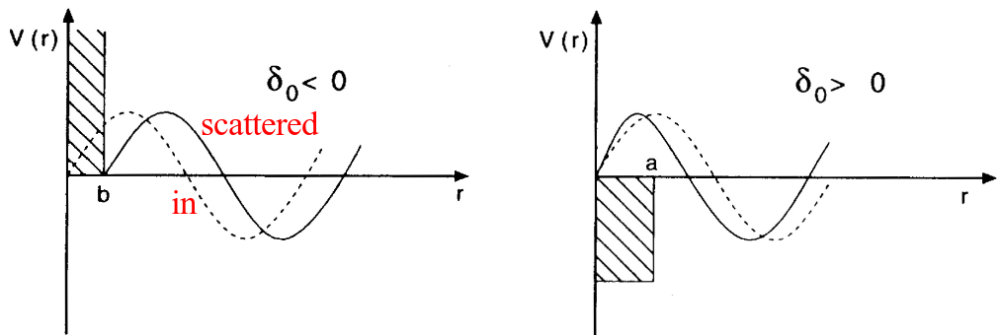
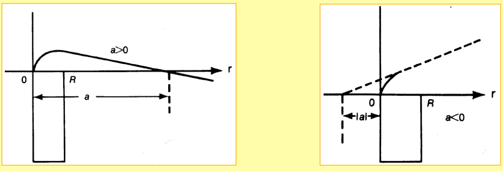
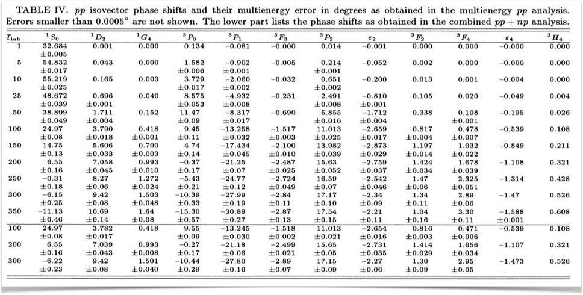

Nuclear forces
Spring 2016
Components of the force and isospin
The nuclear forces are almost charge independent. If we assume they are, we can introduce a new quantum number which is conserved. For nucleons only, that is a proton and neutron, we can limit ourselves to two possible values which allow us to distinguish between the two particles. If we assign an isospin value of \( \tau=1/2 \) for protons and neutrons (they belong to an isospin doublet, in the same way as we discussed the spin \( 1/2 \) multiplet), we can define the neutron to have isospin projection \( \tau_z=+1/2 \) and a proton to have \( \tau_z=-1/2 \). These assignements are the standard choices in low-energy nuclear physics.
Phenomenology of nuclear forces
- Chadwick (1932) discovers the neutron and Heisenberg (1932) proposes the first Phenomenology (Isospin).
- Yukawa (1935) and his Meson Hypothesis
- Discovery of the pion in cosmic ray (1947) and in the Berkeley Cyclotron Lab (1948).
- Nobelprize awarded to Yukawa (1949). Rabi (1948) measures quadrupole moment of the deuteron.
- Taketani, Nakamura, Sasaki (1951): 3 ranges. One-Pion-Exchange (OPE): o.k.
- Multi-pion exchanges: Problems! Taketani, Machida, Onuma (1952);
- Pion Theories Brueckner, Watson (1953).
Phenomenology of nuclear forces
- Many pions = multi-pion resonances: \( \sigma(600) \), \( \rho(770) \), \( \omega(782) \) etc. One-Boson-Exchange Model.
- Refined Meson Theories
- Sophisticated models for two-pion exchange:
- Paris Potential (Lacombe et al., Phys. Rev. C 21, 861 (1980))
- Bonn potential (Machleidt et al., Phys. Rep. 149, 1 (1987))
*Quark cluster models. Begin of effective field theory studies.
Phenomenology of nuclear forces
- 1990's
- 1993-2001: High-precision NN potentials: Nijmegen I, II, '93, Reid93 (Stoks et al. 1994),
- Argonne V18 (Wiringa et al, 1995), CD-Bonn (Machleidt et al. 1996 and 2001.
- Advances in effective field theory: Weinberg (1990); Ordonez, Ray, van Kolck and many more.
- 3rd Millenium
- Another "pion theory"; but now right: constrained by chiral symmetry. Three-body and higher-body forces appear naturally at a given order of the chiral expansion.
Nucleon-nucleon interaction from Lattice QCD, final confirmation of meson hypothesis of Yukawa? See for example Ishii et al, PRL 2007
Phenomenology of nuclear forces
The aim is to give you an overview over central features of the nucleon-nucleon interaction and how it is constructed, with both technical and theoretical approaches.
- The existence of the deuteron with \( J^{\pi}=1^+ \) indicates that the force between protons and neutrons is attractive at least for the \( ^3S_1 \) partial wave. Interference between Coulomb and nuclear scattering for the proton-proton partial wave \( ^1S_0 \) shows that the NN force is attractive at least for the \( ^1S_0 \) partial wave.
- It has a short range and strong intermediate attraction.
- Spin dependent, scattering lengths for triplet and singlet states are different,
- Spin-orbit force. Observation of large polarizations of scattered nucleons perpendicular to the plane of scattering.
Phenomenology of nuclear forces
- Strongly repulsive core. The \( s \)-wave phase shift becomes negative at \( \approx 250 \) MeV implying that the singlet \( S \) has a hard core with range \( 0.4-0.5 \) fm.
- Charge independence (almost). Two nucleons in a given two-body state always (almost) experience the same force. Modern interactions break charge and isospin symmetry lightly. That means that the pp, neutron-neutron and pn parts of the interaction will be different for the same quantum numbers.
- Non-central. There is a tensor force. First indications from the quadrupole moment of the deuteron pointing to an admixture in the ground state of both \( l=2 \) (\( ^3D_1 \)) and \( l=0 \) (\( ^3S_1 \)) orbital momenta.
Phenomenology of nuclear forces
Comparison of the binding energies of \( {}^2\mbox{H} \) (deuteron), \( {}^3\mbox{H} \) (triton), \( {}^4\mbox{He} \) (alpha - particle) show that the nuclear force is of finite range (\( 1-2 \) fm) and very strong within that range.
For nuclei with \( A>4 \), the energy saturates: Volume and binding energies of nuclei are proportional to the mass number \( A \) (as we saw from exercise 1).
Nuclei are also bound. The average distance between nucleons in nuclei is about \( 2 \) fm which must roughly correspond to the range of the attractive part.
Phenomenology of nuclear forces
- After correcting for the electromagnetic interaction, the forces between nucleons (pp, nn, or np) in the same state are almost the same.
- Almost the same: Charge-independence is slightly broken.
- Equality between the pp and nn forces: Charge symmetry.
- Equality between pp/nn force and np force: Charge independence.
- Better notation: Isospin symmetry, invariance under rotations in isospin
Phenomenology of nuclear forces
Charge-symmetry breaking (CSB), after electromagnetic effects have been removed:
- \( a_{pp}= -17.3 \pm 0.4 \hspace{0.cm} \mathrm{fm} \)
- \( a_{nn}=-18.8 \pm 0.5 \hspace{0.cm} \mathrm{fm} \). Note however discrepancy from \( nd \) breakup reactions resulting in \( a_{nn}=-18.72 \pm 0.13 \pm 0.65 \hspace{0.cm} \mathrm{fm} \) and \( \pi^- + d \rightarrow \gamma + 2n \) reactions giving \( a_{nn}=-18.93 \pm 0.27 \pm 0.3 \hspace{0.cm} \mathrm{fm} \).
Charge-independence breaking (CIB)
- \( a_{pn}= -23.74 \pm 0.02 \hspace{0.cm} \mathrm{fm} \)
Symmetries of the Nucleon-Nucleon (NN) Force
- Translation invariance
- Galilean invariance
- Rotation invariance in space
- Space reflection invariance
- Time reversal invariance
- Invariance under the interchange of particle \( 1 \) and \( 2 \)
- Almost isospin symmetry
A typical form of the nuclear force
Here we display a typical way to parametrize (non-relativistic expression) the nuclear two-body force in terms of some operators, the central part, the spin-spin part and the central force.
$$
V(\mathbf{r})= \left\{ C_c + C_\mathbf{\sigma} \mathbf{\sigma}_1\cdot\mathbf{\sigma}_2
+ C_T \left( 1 + {3\over m_\alpha r} + {3\over\left(m_\alpha r\right)^2}\right) S_{12} (\hat r)\right.
$$
$$
\left. + C_{SL} \left( {1\over m_\alpha r} + {1\over \left( m_\alpha r\right)^2}
\right) \mathbf{L}\cdot \mathbf{S}
\right\} \frac{e^{-m_\alpha r}}{m_\alpha r}
$$
How do we derive such terms? (Note: no isospin dependence and that the above is an approximation)
Nuclear forces
To derive the above famous form of the nuclear force using field theoretical concepts, we will need some elements from relativistic quantum mechanics. These derivations will be given below. The material here gives some background to this. I know that many of you have not taken a course in quantum field theory. I hope however that you can see the basic ideas leading to the famous non-relativistic expressions for the nuclear force.
Furthermore, when we analyze nuclear data, we will actually try to explain properties like spectra, single-particle energies etc in terms of the various terms of the nuclear force. Moreover, many of you will hear about these terms at various talks, workshops, seminars etc. Then, it is good to have an idea of what people actually mean!!
Dramatis Personae
| Baryons | Mass (MeV) | Mesons | Mass (MeV) |
|---|---|---|---|
| \( p,n \) | 938.926 | \( \pi \) | 138.03 |
| \( \Lambda \) | 1116.0 | \( \eta \) | 548.8 |
| \( \Sigma \) | 1197.3 | \( \sigma \) | \( \approx 550.0 \) |
| \( \Delta \) | 1232.0 | \( \rho \) | 770 |
| \( \omega \) | 782.6 | ||
| \( \delta \) | 983.0 | ||
| \( K \) | 495.8 | ||
| \( K^{\star} \) | 895.0 |
Components of the force and quantum numbers
But before we proceed, we will look into specific quantum numbers of the relative system and study expectation vaues of the various terms of
$$
V(\mathbf{r})= \left\{ C_c + C_\mathbf{\sigma} \mathbf{\sigma}_1\cdot\mathbf{\sigma}_2
+ C_T \left( 1 + {3\over m_\alpha r} + {3\over
\left(m_\alpha r\right)^2}\right) S_{12} (\hat r)\right.
$$
$$
\left. + C_{SL} \left( {1\over m_\alpha r} + {1\over \left( m_\alpha r\right)^2}
\right) \mathbf{L}\cdot \mathbf{S}
\right\} \frac{e^{-m_\alpha r}}{m_\alpha r}
$$
Relative and CoM system, quantum numbers
When solving the scattering equation or solving the two-nucleon problem, it is convenient to rewrite the Schroedinger equation, due to the spherical symmetry of the Hamiltonian, in relative and center-of-mass coordinates. This will also define the quantum numbers of the relative and center-of-mass system and will aid us later in solving the so-called Lippman-Schwinger equation for the scattering problem.
We define the center-of-mass (CoM) momentum as
$$
\mathbf{K}=\sum_{i=1}^A\mathbf{k}_i,
$$
with \( \hbar=c=1 \) the wave number \( k_i=p_i \), with \( p_i \) the pertinent momentum of a single-particle state.
We have also the relative momentum
$$
\mathbf{k}_{ij}=\frac{1}{2}(\mathbf{k}_i-\mathbf{k}_j).
$$
We will below skip the indices \( ij \) and simply write \( \mathbf{k} \)
Relative and CoM system, quantum numbers
In a similar fashion we can define the CoM coordinate
$$
\mathbf{R}=\frac{1}{A}\sum_{i=1}^{A}\mathbf{r}_i,
$$
and the relative distance
$$
\mathbf{r}_{ij}=(\mathbf{r}_i-\mathbf{r}_j).
$$
Relative and CoM system, quantum numbers
With the definitions
$$
\mathbf{K}=\sum_{i=1}^A\mathbf{k}_i,
$$
and
$$
\mathbf{k}_{ij}=\frac{1}{2}(\mathbf{k}_i-\mathbf{k}_j).
$$
we can rewrite the two-particle kinetic energy (note that we use \( \hbar=c=1 \) as
$$
\frac{\mathbf{k}_1^2}{2m_n}+\frac{\mathbf{k}_2^2}{2m_n}=\frac{\mathbf{k}^2}{m_n}+\frac{\mathbf{K}^2}{4m_n},
$$
where \( m_n \) is the average of the proton and the neutron masses.
Relative and CoM system, quantum numbers
Since the two-nucleon interaction depends only on the relative distance, this means that we can separate Schroedinger's equation in an equation for the center-of-mass motion and one for the relative motion.
With an equation for the relative motion only and a separate one for the center-of-mass motion we need to redefine the two-body quantum numbers.
Previously we had a two-body state vector defined as \( |(j_1j_2)JM_J\rangle \) in a coupled basis. We will now define the quantum numbers for the relative motion. Here we need to define new orbital momenta (since these are the quantum numbers which change). We define
$$
\hat{l}_1+\hat{l}_2=\hat{\lambda}=\hat{l}+\hat{L},
$$
where \( \hat{l} \) is the orbital momentum associated with the relative motion and
\( \hat{L} \) the corresponding one linked with the CoM. The total spin \( S \) is unchanged since it acts in a different space. We have thus that
$$
\hat{J}=\hat{l}+\hat{L}+\hat{S},
$$
which allows us to define the angular momentum of the relative motion
$$
{ \cal J} = \hat{l}+\hat{S},
$$
where \( { \cal J} \) is the total angular momentum of the relative motion.
Phenomenology of nuclear forces
The total two-nucleon state function has to be anti-symmetric. The total function contains a spatial part, a spin part and an isospin part. If isospin is conserved, this leads to in case we have an \( s \)-wave with spin \( S=0 \) to an isospin two-body state with \( T=1 \) since the spatial part is symmetric and the spin part is anti-symmetric.
Since the projections for \( T \) are \( T_z=-1,0,1 \), we can have a \( pp \), an \( nn \) and a \( pn \) state.
For \( l=0 \) and \( S=1 \), a so-called triplet state, \( ^3S_1 \), we must have \( T=0 \), meaning that we have only one state, a \( pn \) state. For other partial waves, the following table lists states up to \( f \) waves. We can systemize this in a table as follows, recalling that \( |\mathbf{l}-\mathbf{S}| \le |\mathbf{J}| \le |\mathbf{l}+\mathbf{S}| \),
| \( ^{2S+1}l_J \) | \( J \) | \( l \) | \( S \) | \( T \) | \( \vert pp\rangle \) | \( \vert pn\rangle \) | \( \vert nn\rangle \) |
| \( ^{1}S_0 \) | 0 | 0 | 0 | 1 | yes | yes | yes |
| \( ^{3}S_1 \) | 1 | 0 | 1 | 0 | no | yes | no |
| \( ^{3}P_0 \) | 0 | 1 | 1 | 1 | yes | yes | yes |
| \( ^{1}P_1 \) | 1 | 1 | 0 | 0 | no | yes | no |
| \( ^{3}P_1 \) | 1 | 1 | 1 | 1 | yes | yes | yes |
| \( ^{3}P_2 \) | 2 | 1 | 1 | 1 | yes | yes | yes |
| \( ^{3}D_1 \) | 1 | 2 | 1 | 0 | no | yes | no |
| \( ^{3}F_2 \) | 2 | 3 | 1 | 1 | yes | yes | yes |
Components of the force and quantum numbers
The tensor force is given by
$$
S_{12} (\hat r) = \frac{3}{r^2}\left(\mathbf{\sigma}_1\cdot \mathbf{r}\right) \left(\mathbf{\sigma}_2\cdot \mathbf{r}\right) -\mathbf{\sigma}_1\cdot\mathbf{\sigma}_2$$
where the Pauli matrices are defined as
$$
\sigma_x =\begin{Bmatrix} 0 & 1 \\ 1 & 0 \end{Bmatrix},
$$
$$
\sigma_y =\begin{Bmatrix} 0 & -\imath \\ \imath & 0 \end{Bmatrix},
$$
and
$$
\sigma_z =\begin{Bmatrix} 1 & 0 \\ 0 & -1 \end{Bmatrix},
$$
with the properties \( \sigma = 2\mathbf{S} \) (the spin of the system, being \( 1/2 \) for nucleons),
\( \sigma^2_x=\sigma^2_y=\sigma_z=\mathbf{1} \) and
obeying the commutation and anti-commutation relations \( \{\sigma_x,\sigma_y\} =0 \)
\( [\sigma_x,\sigma_y] =\imath\sigma_z \) etc.
Components of the force and quantum numbers
When we look at the expectation value of \( \langle \mathbf{\sigma}_1\cdot\mathbf{\sigma}_2\rangle \), we can rewrite this expression in terms of the spin \( \mathbf{S}=\mathbf{s}_1+\mathbf{s}_2 \), resulting in
$$
\langle\mathbf{\sigma}_1\cdot\mathbf{\sigma}_2\rangle=2(S^2-s_1^2-s_2^2)=2S(S+1)-3,
$$
where we \( s_1=s_2=1/2 \) leading to
$$
\left\{ \begin{array}{cc} \langle\mathbf{\sigma}_1\cdot\mathbf{\sigma}_2\rangle=1 & \mathrm{if} \hspace{0.2cm} S=1\\
\langle\mathbf{\sigma}_1\cdot\mathbf{\sigma}_2\rangle=-3 & \mathrm{if} \hspace{0.2cm} S=0\\\end{array}\right.
$$
Components of the force and quantum numbers
Similarly, the expectation value of the spin-orbit term is
$$
\langle \mathbf{l}\mathbf{S} \rangle = \frac{1}{2}\left( J(J+1)-l(l+1)-S(S+1)\right),
$$
which means that for \( s \)-waves with either \( S=0 \) and thereby \( J=0 \) or \( S=1 \) and \( J=1 \),
the expectation value for the
spin-orbit force is zero. With the above phenomenological model, the
only contributions to the expectation value of the potential energy for \( s \)-waves
stem from the central and the spin-spin components since the
expectation value of the tensor force is also zero.
Components of the force and quantum numbers
For \( s=1/2 \) spin values only for two nucleons, the expectation value of the tensor force operator is
| \( l' \) | |||
| \( l \) | \( J+1 \) | \( J \) | \( J-1 \) |
| \( J+1 \) | \( -\frac{2J(J+2)}{2J+1} \) | 0 | \( \frac{6\sqrt{J(J+1)}}{2J+1} \) |
| \( J \) | 0 | 2 | 0 |
| \( J-1 \) | \( \frac{6\sqrt{J(J+1)}}{2J+1} \) | 0 | \( -\frac{2(2J+1)}{2J+1} \) |
We will derive these expressions after we have discussed the Wigner-Eckart theorem.
Components of the force and isospin
If we now add isospin to our simple \( V_4 \) interaction model, we end up with \( 8 \) operators, popularly dubbed \( V_8 \) interaction model. The explicit form reads
$$
V(\mathbf{r})= \left\{ C_c + C_\mathbf{\sigma} \mathbf{\sigma}_1\cdot\mathbf{\sigma}_2
+ C_T \left( 1 + {3\over m_\alpha r} + {3\over
\left(m_\alpha r\right)^2}\right) S_{12} (\hat r)\right.
$$
$$
\left. + C_{SL} \left( {1\over m_\alpha r} + {1\over \left( m_\alpha r\right)^2}
\right) \mathbf{L}\cdot \mathbf{S}
\right\} \frac{e^{-m_\alpha r}}{m_\alpha r}
$$
$$
+ \left\{ C_{c\tau} + C_{\sigma\tau}\mathbf{\sigma}_1\cdot\mathbf{\sigma}_2
+ C_{T\tau} \left( 1 + {3\over m_\alpha r} + {3\over
\left(m_\alpha r\right)^2}\right) S_{12} (\hat r)\right.
$$
$$
\left. + C_{SL\tau} \left( {1\over m_\alpha r} + {1\over \left( m_\alpha r\right)^2}
\right) \mathbf{L}\cdot \mathbf{S}
\right\}\mathbf{\tau}_1\cdot\mathbf{\tau}_2 \frac{e^{-m_\alpha r}}{m_\alpha r}
$$
Phenomenology of nuclear forces
From 1950 till approximately 2000: One-Boson-Exchange (OBE) models dominate. These are models which typically include several low-mass mesons, that is with masses below 1 GeV. Potentials which are based upon the standard non-relativistic operator structure are called "Phenomenological Potentials" Some historically important examples are
- Gammel-Thaler potential ( Phys. Rev. 107, 291, 1339 (1957) and the
- Hamada-Johnston potential, Nucl. Phys. 34, 382 (1962)), both with a hard core.
- Reid potential (Ann. Phys. (N.Y.) 50, 411 (1968)), soft core.
- Argonne \( V_{14} \) potential (Wiringa et al., Phys. Rev. C 29, 1207 (1984)) with 14 operators and the Argonne \( V_{18} \) potential (Wiringa et al., Phys. Rev. C 51, 38 (1995)), uses 18 operators
- A good historical reference: R. Machleidt, Adv. Nucl. Phys. 19, 189 (1989).
Now: models based on chiral perturbation theory. These are effective models with nucleons and pions as degrees of freedom only. The other mesons which appeared in standard one-boson model appear as multi-pion resonances.
Phenomenology of nuclear forces
The total two-nucleon state function has to be anti-symmetric. The total function contains a spatial part, a spin part and an isospin part. If isospin is conserved, this leads to in case we have an \( s \)-wave with spin \( S=0 \) to an isospin two-body state with \( T=1 \) since the spatial part is symmetric and the spin part is anti-symmetric.
Since the projections for \( T \) are \( T_z=-1,0,1 \), we can have a \( pp \), an \( nn \) and a \( pn \) state.
For \( l=0 \) and \( S=1 \), a so-called triplet state, \( ^3S_1 \), we must have \( T=0 \), meaning that we have only one state, a \( pn \) state. For other partial waves, see exercises below.
Phenomenology of nuclear forces
The one-pion exchange contribution (see derivation below), can be written as
$$
V_{\pi}(\mathbf{r})= -\frac{f_{\pi}^{2}}{4\pi m_{\pi}^{2}}\mathbf{ \tau}_1\cdot\mathbf{\tau}_2
\frac{1}{3}\left\{\mathbf{ \sigma}_1\cdot\mathbf{ \sigma}_2+\left( 1 + {3\over m_\pi r} + {3\over\left(m_\pi r\right)^2}\right) S_{12} (\hat r)\right\} \frac{e^{-m_\pi r}}{m_\pi r}.
$$
Here the constant \( f_{\pi}^{2}/4\pi\approx 0.08 \) and the mass of the pion is \( m_\pi\approx 140 \) MeV/$\mbox{c}^2$.
Phenomenology of nuclear forces
Let us look closer at specific partial waves for which one-pion exchange is applicable. If we have \( S=0 \) and \( T=0 \), the orbital momentum has to be an odd number in order for the total anti-symmetry to be obeyed. For \( S=0 \), the tensor force component is zero, meaning that the only contribution is
$$
V_{\pi}(\mathbf{r})=\frac{3f_{\pi}^{2}}{4\pi m_{\pi}^{2}}\frac{e^{-m_\pi r}}{m_\pi r},
$$
since \( \langle\mathbf{ \sigma}_1\cdot\mathbf{ \sigma}_2\rangle=-3 \), that is we obtain a repulsive contribution to partial waves like
\( ^1P_0 \).
Phenomenology of nuclear forces
Since \( S=0 \) yields always a zero tensor force contribution, for the combination of \( T=1 \) and then even \( l \) values, we get an attractive contribution
$$
V_{\pi}(\mathbf{r})=-\frac{f_{\pi}^{2}}{4\pi m_{\pi}^{2}}\frac{e^{-m_\pi r}}{m_\pi r}.
$$
With \( S=1 \) and \( T=0 \), \( l \) can only take even values in order to obey the anti-symmetry requirements and we get
$$
V_{\pi}(\mathbf{r})= -\frac{f_{\pi}^{2}}{4\pi m_{\pi}^{2}}
\left(1+( 1 + {3\over m_\pi r} + {3\over\left(m_\pi r\right))^2}) S_{12} (\hat r)\right) \frac{e^{-m_\pi r}}{m_\pi r},
$$
while for \( S=1 \) and \( T=1 \), \( l \) can only take odd values, resulting in a repulsive contribution
$$
V_{\pi}(\mathbf{r})= \frac{1}{3}\frac{f_{\pi}^{2}}{4\pi m_{\pi}^{2}}\left(1+( 1 + {3\over m_\pi r} + {3\over\left(m_\pi r\right)^2}) S_{12} (\hat r)\right) \frac{e^{-m_\pi r}}{m_\pi r}.
$$
Phenomenology of nuclear forces
The central part of one-pion exchange interaction, arising from the spin-spin term, is thus attractive for \( s \)-waves and all even \( l \) values. For \( p \)-waves and all other odd values it is repulsive. However, its overall strength is weak. This is discussed further in one of exercises below.
Models for nuclear forces and derivation of non-relativistic expressions
To describe the interaction between the various baryons and mesons of the previous table we choose the following phenomenological lagrangians for spin \( 1/2 \) baryons
$$
{\cal L}_{ps} =g^{ps}\overline{\Psi}\gamma^{5}
\Psi\phi^{(ps)},
$$
$$
{\cal L}_{s} =g^{s}\overline{\Psi}\Psi\phi^{(s)},
$$
and
$$
{\cal L}_{v} =g^{v}\overline{\Psi}\gamma_{\mu}\Psi\phi_{\mu}^{(v)}
+g^{t}\overline{\Psi}\sigma^{\mu\nu}\Psi\left
(\partial_{\mu}\phi_{\nu}^{(v)}
-\partial_{\nu}\phi_{\mu}^{(v)}\right),
$$
for pseudoscalar (ps), scalar (s) and vector (v) coupling, respectively.
The factors \( g^{v} \) and \( g^{t} \) are the vector
and tensor coupling constants, respectively.
Models for nuclear forces and derivation of non-relativistic expressions
For spin \( 1/2 \) baryons, the fields \( \Psi \) are expanded in terms of the Dirac spinors (positive energy solution shown here with \( \overline{u}u=1 \))
$$
u(k\sigma)=\sqrt{\frac{E(k)+m}{2m}}
\left(\begin{array}{c} \chi\\ \\
\frac{\mathbf{\sigma}\mathbf{k}}{E(k)+m}\chi
\end{array}\right),
$$
with \( \chi \) the familiar Pauli spinor and \( E(k) =\sqrt{m^2 +|\mathbf{k}|^2} \).
The positive energy part of the field \( \Psi \) reads
$$
\Psi (x)={\displaystyle \frac{1}{(2\pi )^{3/2}}
\sum_{\mathbf{k}\mathbf{\sigma}}u(k\mathbf{\sigma})\exp{-(ikx)}a_{\mathbf{k}\mathbf{\sigma}}},
$$
with \( a \) being a fermion annihilation operator.
Models for nuclear forces and derivation of non-relativistic expressions
Expanding the free Dirac spinors in terms of \( 1/m \) (\( m \) is here the mass of the relevant baryon) results, to lowest order, in the familiar non-relativistic expressions for baryon-baryon potentials. The configuration space version of the interaction can be approximated as
$$
V(\mathbf{r})= \left\{ C^0_C + C^1_C + C_\sigma
\mathbf{\sigma}_1\cdot\mathbf{\sigma}_2
+ C_T \left( 1 + {3\over m_\alpha r} + {3\over
\left(m_\alpha r\right)^2}
\right) S_{12} (\hat r)\right.
$$
$$
+ C_{SL}\left. \left( {1\over m_\alpha r} + {1\over \left( m_\alpha r\right)^2}
\right) \mathbf{L}\cdot \mathbf{S}
\right\} \frac{\exp{-(m_\alpha r)}}{m_\alpha r},
$$
where \( m_{\alpha} \) is the mass of the relevant meson and
\( S_{12} \) is the familiar tensor term.
Models for nuclear forces and derivation of non-relativistic expressions
We derive now the non-relativistic one-pion exchange interaction.
Here \( p_{1} \), \( p_{1}' \), \( p_{2} \), \( p_{2}' \) and \( k=p_{1}-p_{1}' \) denote four-momenta. The vertices are given by the pseudovector Lagrangian
$$
{\cal L}_{pv}=\frac{f_{\pi}}{m_{\pi}}\overline{\psi}\gamma_{5}\gamma_{\mu}
\psi\partial^{\mu}\phi_{\pi}.
$$
From the Feynman diagram rules we can write the two-body interaction as
$$
V^{pv}=\frac{f_{\pi}^{2}}{m_{\pi}^{2}}\frac{\overline{u}(p_{1}')\gamma_{5}
\gamma_{\mu}(p_{1}-p_{1}')^{\mu}u(p_{1})\overline{u}(p_{2}')\gamma_{5}
\gamma_{\nu}(p_{2}'-p_{2})^{\nu}u(p_{2})}{(p_{1}-p_{1}')^{2}-m_{\pi}^{2}}.
$$
Models for nuclear forces and derivation of non-relativistic expressions
The factors \( p_{1}-p_{1}'=p_{2}'-p_{2} \) are both the four-momentum of the exchanged meson and come from the derivative of the meson field in the interaction Lagrangian. The Dirac spinors obey
$$
\begin{eqnarray*}
\gamma_{\mu}p^{\mu}u(p)&=&mu(p) \nonumber \\
\overline{u}(p)\gamma_{\mu}p^{\mu}&=&m\overline{u}(p). \nonumber
\end{eqnarray*}
$$
Models for nuclear forces and derivation of non-relativistic expressions
Using these relations, together with \( \{\gamma_{5},\gamma_{\mu}\}=0 \), we find
$$
\begin{eqnarray*}
\overline{u}(p_{1}')\gamma_{5}\gamma_{\mu}(p_{1}-p_{1}')^{\mu}u(p_{1})
&=&m\overline{u}(p_{1}')\gamma_{5}u(p_{1})+\overline{u}(p_{1}')\gamma_{\mu}
p_{1}'^{\mu}\gamma_{5}u(p_{1}) \nonumber \\
&=&2m\overline{u}(p_{1}')\gamma_{5}u(p_{1}) \nonumber
\end{eqnarray*}
$$
and
$$
\overline{u}(p_{2}')\gamma_{5}\gamma_{\mu}(p_{2}'-p_{2})^{\mu}=
-2m\overline{u}(p_{2}')\gamma_{5}u(p_{1}).
$$
Models for nuclear forces and derivation of non-relativistic expressions
We get
$$
V^{pv}=-\frac{f_{\pi}^{2}}{m_{\pi}^{2}}4m^{2}\frac{\overline{u}(p_{1}')
\gamma_{5}u(p_{1})\overline{u}(p_{2}')\gamma_{5}u(p_{2})}{(p_{1}-p_{1}')
^{2}-m_{\pi}^{2}}.
$$
By inserting expressions for the Dirac spinors, we find
$$
\begin{eqnarray*}
\overline{u}(p_{1}')\gamma_{5}u(p_{1})&=&\sqrt{\frac{(E_{1}'+m)(E_{1}+m)}
{4m^{2}}}\left(\begin{array}{cc}\chi^{\dagger}&-\frac{\sigma_{1}\cdot{
\bf p_{1}}}{E_{1}'
+m}\chi^{\dagger}\end{array}\right)\left(\begin{array}{cc}0&1\\1&0\end{array}
\right)\nonumber \\
&&\times \left(\begin{array}{c}\chi\\ \frac{\sigma_{1}\cdot\mathbf{p_{1}}}{E_{1}+m}\chi
\end{array}\right)
\nonumber \\
&=&\sqrt{\frac{(E_{1}'+m)(E_{1}+m)}{4m^{2}}}\left(\frac{\sigma_{1}\cdot
\mathbf{p_{1}}}{E_{1}+m}-\frac{\sigma_{1}\cdot\mathbf{p_{1}'}}{E_{1}'+m}\right)
\nonumber
\end{eqnarray*}
$$
Models for nuclear forces and derivation of non-relativistic expressions
Similarly
$$
\overline{u}(p_{2}')\gamma_{5}u(p_{2})=\sqrt{\frac{(E_{2}'+m)(E_{2}+m)}
{4m^{2}}}\left(\frac{\sigma_{2}\cdot \mathbf{p}_{2}}{E_{2}+m}-
\frac{\sigma_{2}\cdot\mathbf{p'}_{2}}{E_{2}'+m}\right).
$$
In the CM system we have \( \mathbf{p}_{2}=-\mathbf{p}_{1} \), \( \mathbf{p'}_{2}=
-\mathbf{p'}_{1} \) and so \( E_{2}=E_{1} \), \( E_{2}'=E_{1}' \).
We can then write down the relativistic contribution
to the NN potential in the CM system:
$$
\begin{eqnarray}
V^{pv}&=&-\frac{f_{\pi}^{2}}{m_{\pi}^{2}}4m^{2}\frac{1}{(p_{1}-p_{1}')^{2}-
m_{\pi}^{2}}\frac{(E_{1}+m)(E_{1}'+m)}{4m^{2}} \nonumber \\
&\times&\left(\frac{\sigma_{1}\cdot\mathbf{p}_{1}}{E_{1}+m}-\frac{\sigma_{1}
\cdot\mathbf{p'}_{1}}{E_{1}'+m}\right)\left(\frac{\sigma_{2}\cdot\mathbf{p}_{1}}
{E_{1}+m}-\frac{\sigma_{2}\cdot\mathbf{p'}_{1}}{E_{1}'+m}\right). \nonumber
\end{eqnarray}
$$
Models for nuclear forces and derivation of non-relativistic expressions
In the non-relativistic limit we have to lowest order
$$
E_{1}=\sqrt{\mathbf{p}_{1}^{2}+m^{2}}\approx m \approx E_{1}'
$$
and then \( (p_{1}-p_{1}')^{2}=-\mathbf{k}^{2} \), so we get
for the contribution to the NN potential
$$
\begin{eqnarray}
V^{pv}&=&-\frac{f_{\pi}^{2}}{m_{\pi}^{2}}4m^{2}\frac{1}{\mathbf{k}^{2}+m^{2}}
\frac{2m\cdot 2m}{4m^{2}}\frac{\sigma_{1}}{2m}\cdot(\mathbf{p}_{1}-\mathbf{p'}_{1})
\frac{\sigma_{2}}{2m}\cdot (\mathbf{p}_{1}-\mathbf{p'}_{1}) \nonumber \\
&=&-\frac{f_{\pi}^{2}}{m_{\pi}^{2}}
\frac{(\sigma_{1}\cdot\mathbf{k})(\sigma_{2}\cdot\mathbf{k})}{\mathbf{k}^{2}+m_{\pi}^{2}}.
\nonumber
\end{eqnarray}
$$
We have omitted exchange terms and the isospin term \( \mathbf{\tau}_1\cdot\mathbf{\tau}_2 \).
Models for nuclear forces and derivation of non-relativistic expressions
We have
$$
V^{pv}(k)=-\frac{f_{\pi}^{2}}{m_{\pi}^{2}}
\frac{(\sigma_{1}\cdot\mathbf{k})(\sigma_{2}\cdot\mathbf{k})}{\mathbf{k}^{2}+m_{\pi}^{2}}.
$$
In coordinate space we have
$$
V^{pv}(r)=\int\frac{d^3k}{(2\pi)^3}e^{i\mathbf{kr}}V^{pv}(k)
$$
resulting in
$$
V^{pv}(r)=-\frac{f_{\pi}^{2}}{m_{\pi}^{2}}
\sigma_{1}\cdot{\nabla}\sigma_{2}\cdot{\nabla}
\int\frac{d^3k}{(2\pi)^3}e^{i\mathbf{kr}}\frac{1}{\mathbf{k}^{2}+m_{\pi}^{2}}.
$$
Models for nuclear forces and derivation of non-relativistic expressions
We obtain
$$
V^{pv}(r)=-\frac{f_{\pi}^{2}}{m_{\pi}^{2}}\sigma_{1}\cdot{\nabla}\sigma_{2}\cdot{\nabla}\frac{e^{-m_{\pi}r}}{r}.
$$
Carrying out the differentation of
$$
V^{pv}(r)=-\frac{f_{\pi}^{2}}{m_{\pi}^{2}}\sigma_{1}\cdot{\nabla}\sigma_{2}\cdot{\nabla}\frac{e^{-m_{\pi}r}}{r}.
$$
we arrive at the famous one-pion exchange potential with central and tensor parts
$$
V(\mathbf{r})= -\frac{f_{\pi}^{2}}{m_{\pi}^{2}}\left\{C_{\sigma}\mathbf{\sigma}_1\cdot\mathbf{\sigma}_2+ C_T \left( 1 + \frac{3}{m_\alpha r} + \frac{3}{\left(m_\alpha r\right)^2}\right) S_{12}(\hat r)\right\}\frac{\exp{-m_\pi r}}{m_\pi r}.
$$
For the full potential add the exchange part and the \( \mathbf{\tau}_1\cdot\mathbf{\tau}_2 \) term as well. (Subtle point: there is a divergence which gets cancelled by using cutoffs) This leads to coefficients \( C_{\sigma} \) and \( C_T \) which are fitted to data.
Models for nuclear forces and derivation of non-relativistic expressions
When we perform similar non-relativistic expansions for scalar and vector mesons we obtain for the \( \sigma \) meson
$$
V^{\sigma}= g_{\sigma NN}^{2}\frac{1}{\mathbf{k}^{2}+m_{\sigma}^{2}}\left (-1+\frac{\mathbf{q}^{2}}{2M_N^2}
-\frac{\mathbf{k}^{2}}{8M_N^2}-\frac{\mathbf{LS}}{2M_N^2}\right).
$$
We note an attractive central force and spin-orbit force. This term has an intermediate range.
We have defined \( 1/2(p_{1}+p_{1}')=\mathbf{q} \).
For the full potential add the exchange part and the isospin dependence as well.
Models for nuclear forces and derivation of non-relativistic expressions
We obtain for the \( \omega \) meson
$$
V^{\omega}= g_{\omega NN}^{2}\frac{1}{\mathbf{k}^{2}+m_{\omega}^{2}}\left (1-3\frac{\mathbf{LS}}{2M_N^2}\right).
$$
We note a repulsive central force and an attractive spin-orbit force. This term has short range.
For the full potential add the exchange part and the isospin dependence as well.
Models for nuclear forces and derivation of non-relativistic expressions
Finally for the \( \rho \) meson
$$
V^{\rho}= g_{\rho NN}^{2}\frac{\mathbf{k}^{2}}{\mathbf{k}^{2}+m_{\rho}^{2}}\left (
-2\sigma_{1}\sigma_{2}+S_{12}(\hat{k})\right)\tau_{1}\tau_{2}.
$$
We note a tensor force with sign opposite to that of the pion. This term has short range. For the full potential add the exchange part and the isospin dependence as well.
Models for nuclear forces and derivation of non-relativistic expressions
- Can use a one-boson exchange picture to construct a nucleon-nucleon interaction a la QED
- Non-relativistic approximation yields amongst other things a spin-orbit force which is much stronger than in atoms.
- At large intermediate distances pion exchange dominates while pion resonances (other mesons) dominate at intermediate and short range
- Potentials are parameterized to fit selected two-nucleon data, binding energies and scattering phase shifts.
- Nowaydays, chiral perturbation theory gives an effective theory that allows a systematic expansion in terms of contrallable parameters. Good basis for many-body physics
The Lippman-Schwinger equation for two-nucleon scattering
What follows now is a more technical discussion on how we can solve the two-nucleon problem. This will lead us to the so-called Lippman-Schwinger equation for the scattering problem and a rewrite of Schroedinger's equation in relative and center-of-mass coordinates.
Before we break down the Schroedinger equation into a partial wave decomposition, we derive now the so-called Lippman-Schwinger equation. We will do this in an operator form first. Thereafter, we rewrite it in terms of various quantum numbers such as relative momenta, orbital momenta etc. The Schroedinger equation in abstract vector representation is
$$
\left( \hat{H}_0 + \hat{V} \right) \vert \psi_n \rangle = E_n \vert\psi_n \rangle.
$$
In our case for the two-body problem \( \hat{H}_0 \) is just the kinetic energy.
We rewrite it as
$$
\left( \hat{H}_0 -E_n \right)\vert\psi_n \rangle =-\hat{V}\vert \psi_n \rangle .
$$
We assume that the invers of \( \left( \hat{H}_0 -E_n\right) \) exists and rewrite this equation as
$$
\vert\psi_n \rangle =\frac{1}{\left( E_n -\hat{H}_0\right)}\hat{V}\vert \psi_n \rangle .
$$
The Lippman-Schwinger equation for two-nucleon scattering
The equation
$$
\vert \psi_n \rangle =\frac{1}{\left( E_n -\hat{H}_0\right)}\hat{V}\vert \psi_n \rangle,
$$
is normally solved in an iterative fashion.
We assume first that
$$
\vert\psi_n \rangle = \vert\phi_n \rangle,
$$
where \( \vert\phi_n \rangle \) are the eigenfunctions of
$$
\hat{H}_0\vert \phi_n \rangle=\omega_n\vert \phi_n \rangle
$$
the so-called unperturbed problem. In our case, these will simply be the kinetic energies of the relative motion.
The Lippman-Schwinger equation for two-nucleon scattering
Inserting \( \vert\phi_n \rangle \) on the right-hand side of
$$
\vert \psi_n \rangle =\frac{1}{( E_n -\hat{H}_0)}\hat{V}\vert \psi_n \rangle,
$$
yields
$$
\vert \psi_n \rangle =\vert\phi_n \rangle+\frac{1}{\left( E_n -\hat{H}_0\right)}\hat{V}\vert \phi_n \rangle,
$$
as our first iteration.
Reinserting again gives
$$
\vert \psi_n \rangle =\vert\phi_n \rangle+\frac{1}{\left( E_n -\hat{H}_0\right)}\hat{V}\vert \phi_n \rangle+\frac{1}{( E_n -\hat{H}_0)}\hat{V}\frac{1}{\left( E_n -\hat{H}_0\right)}\hat{V}\vert \phi_n \rangle,
$$
and continuing we obtain
$$
\vert \psi_n \rangle =\sum_{i=0}^{\infty}\left[\frac{1}{( E_n -\hat{H}_0)}\hat{V}\right]^i\vert \phi_n \rangle.
$$
The Lippman-Schwinger equation for two-nucleon scattering
It is easy to see that
$$
\vert \psi_n \rangle =\sum_{i=0}^{\infty}\left[\frac{1}{(E_n -\hat{H}_0)}\hat{V}\right]^i\vert \phi_n \rangle,
$$
can be rewritten as
$$
\vert \psi_n \rangle =\vert\phi_n \rangle+\frac{1}{( E_n -\hat{H}_0)}
\hat{V}\left(1+ \frac{1}{(E_n -\hat{H}_0)}\hat{V}+\frac{1}{(E_n -\hat{H}_0)}\hat{V}\frac{1}{(E_n -\hat{H}_0)}\hat{V}+\dots\right]\vert \phi_n \rangle,
$$
which we rewrite as
$$
\vert \psi_n \rangle =\vert\phi_n \rangle+\frac{1}{(E_n -\hat{H}_0)}\hat{V}\vert \psi_n \rangle.
$$
The Lippman-Schwinger equation for two-nucleon scattering
In operator form we have thus
$$
\vert \psi_n \rangle =\vert\phi_n \rangle+\frac{1}{(E_n -\hat{H}_0)}\hat{V}\vert \psi_n \rangle.
$$
We multiply from the left with \( \hat{V} \) and \( \langle \phi_m \vert \) and obtain
$$
\langle \phi_m \vert\hat{V}\vert \psi_n \rangle =\langle \phi_m \vert\hat{V}\vert\phi_n \rangle+\langle \phi_m \vert\hat{V}\frac{1}{(E_n -\hat{H}_0)}\hat{V}\vert \psi_n \rangle.
$$
We define thereafter the so-called \( T \)-matrix as
$$
\langle \phi_m \vert\hat{T}\vert \phi_n \rangle=\langle \phi_m \vert\hat{V}\vert \psi_n \rangle.
$$
We can rewrite our equation as
$$
\langle \phi_m \vert\hat{T}\vert \phi_n \rangle =\langle \phi_m \vert\hat{V}\vert\phi_n \rangle+\langle \phi_m \vert\hat{V}\frac{1}{(E_n -\hat{H}_0)}\hat{T}\vert \phi_n \rangle.
$$
The Lippman-Schwinger equation for two-nucleon scattering
The equation
$$
\langle \phi_m \vert\hat{T}\vert \phi_n \rangle =\langle \phi_m \vert\hat{V}\vert\phi_n \rangle+\langle \phi_m \vert\hat{V}\frac{1}{(E_n -\hat{H}_0)}\hat{T}\vert \phi_n \rangle,
$$
is called the Lippman-Schwinger equation. Inserting the completeness relation
$$
\mathbf{1} = \sum_n \vert \phi_n\rangle\langle \phi_n \vert, \:\: \langle \phi_n\vert \phi_{n'} \rangle = \delta_{n,n'}
$$
we have
$$
\langle \phi_m \vert\hat{T}\vert \phi_n \rangle =\langle \phi_m \vert\hat{V}\vert\phi_n \rangle+\sum_k \langle \phi_m \vert\hat{V}\vert \phi_k\rangle\frac{1}{(E_n -\omega_k)}\langle \phi_k \vert\hat{T}\vert \phi_n \rangle,
$$
which is (when we specify the state \( \vert\phi_n \rangle \)) an integral equation that can actually be solved by matrix inversion easily! The unknown quantity is the \( T \)-matrix.
The Lippman-Schwinger equation for two-nucleon scattering
Now we wish to introduce a partial wave decomposition in order to solve the Lippman-Schwinger equation. With a partial wave decomposition we can reduce a three-dimensional integral equation to a one-dimensional one.
Let us continue with our Schroedinger equation in the abstract vector representation
$$
\left(T + V\right)\vert\psi_n\rangle = E_n\vert\psi_n \rangle
$$
Here \( T \) is the kinetic energy operator and \( V \) is the potential operator.
The eigenstates form a complete orthonormal set according to
$$
\mathbf{1}=\sum_n\vert\psi_n\rangle\langle\psi_n\vert, \:\: \langle\psi_n\vert\psi_{n'}\rangle =\delta_{n,n'}
$$
The Lippman-Schwinger equation for two-nucleon scattering
The most commonly used representations are the coordinate and the momentum space representations. They define the completeness relations
$$
\begin{eqnarray*}
\mathbf{1}&=& \int d\mathbf{r} \:\vert\mathbf{r} \rangle \langle \mathbf{r}\vert, \:\: \langle \mathbf{r}\vert \mathbf{r'} \rangle = \delta ( \mathbf{r}-\mathbf{r'}) \\
\mathbf{1} &=& \int d\mathbf{k} \:\vert \mathbf{k}\rangle \langle \mathbf{k}\vert, \:\: \langle\mathbf{k}\vert \mathbf{k'} \rangle = \delta ( \mathbf{k}-\mathbf{k'})
\end{eqnarray*}
$$
Here the basis states in both \( \mathbf{r} \)- and \( \mathbf{k} \)-space are dirac-delta
function normalized. From this it follows that the plane-wave states are given by,
$$
\langle\mathbf{r}\vert\mathbf{k} \rangle =\left(\frac{1}{2\pi}\right)^{3/2}\exp\left(i\mathbf{k\cdot r} \right)
$$
which is a transformation function defining the mapping from the abstract
\( \vert\mathbf{k}\rangle \) to the abstract \( \vert\mathbf{r}\rangle \) space.
The Lippman-Schwinger equation for two-nucleon scattering
That the \( \mathbf{r} \)-space basis states are delta-function normalized follows from
$$
\delta ( \mathbf{r}-\mathbf{r'}) = \langle \mathbf{r} \vert \mathbf{r}'\rangle = \langle \mathbf{r} \vert \mathbf{1} \vert \mathbf{r}'\rangle = \int d\mathbf{k} \langle \mathbf{r}\vert \mathbf{k} \rangle \langle \mathbf{k}\vert \mathbf{r}' \rangle =\left( {1\over 2\pi}\right)^3 \int d\mathbf{k} e^{i \mathbf{k}(\mathbf{r} - \mathbf{r}')}
$$
and the same for the momentum space basis states,
$$
\delta ( \mathbf{k}-\mathbf{k'}) = \langle \mathbf{k} \vert \mathbf{k}'\rangle = \langle \mathbf{k} \vert \mathbf{1} \vert \mathbf{k}'\rangle =\int d\mathbf{r} \langle \mathbf{k}\vert \mathbf{r} \rangle \langle \mathbf{r}\vert \mathbf{k}' \rangle = \left( {1\over 2\pi}\right)^3 \int d\mathbf{r} e^{i \mathbf{r}(\mathbf{k} - \mathbf{k}')}
$$
The Lippman-Schwinger equation for two-nucleon scattering
Projecting on momentum states, we obtain the momentum space Schroedinger equation as
$$
\begin{equation}
\frac{\hbar^2}{2\mu}k^2\psi_n(\mathbf{k})+\int d\mathbf{k'}V(\mathbf{k}, \mathbf{k'}) \psi_n(\mathbf{k'})=E_n \psi_n(\mathbf{k})
\tag{1}
\end{equation}
$$
Here the notation \( \psi_n(\mathbf{k}) =\langle\mathbf{k}\vert\psi_n\rangle \) and
\( \langle\mathbf{k}\vert V\vert\mathbf{k}' \rangle =V(\mathbf{k}, \mathbf{k'}) \) has been introduced.
The potential in momentum space is given by a double Fourier-transform
of the potential in coordinate space, i.e.
$$
V(\mathbf{k},\mathbf{k'}) = \left( \frac{1}{2\pi}\right)^3\int d\mathbf{r}\int d\mathbf{r}'\exp{-i\mathbf{kr}}V(\mathbf{r},\mathbf{r}')\exp{i\mathbf{k}'\mathbf{r}'}
$$
The Lippman-Schwinger equation for two-nucleon scattering
Here it is assumed that the potential interaction does not contain any spin dependence. Instead of a differential equation in coordinate space, the Schroedinger equation becomes an integral equation in momentum space. This has many tractable features. Firstly, most realistic nucleon-nucleon interactions derived from field-theory are given explicitly in momentum space. Secondly, the boundary conditions imposed on the differential equation in coordinate space are automatically built into the integral equation. And last, but not least, integral equations are easy to numerically implement, and convergence is obtained by just increasing the number of integration points. Instead of solving the three-dimensional integral equation, an infinite set of 1-dimensional equations can be obtained via a partial wave expansion.
The Lippman-Schwinger equation for two-nucleon scattering
The wave function \( \psi_n(\mathbf{k}) \) can be expanded in a complete set of spherical harmonics, that is
$$
\begin{equation}
\psi_n(\mathbf{k}) = \sum _{lm} \psi_{nlm}(k)Y_{lm}(\hat{k}) \hspace{1cm} \psi_{nlm}(k) = \int d\hat{k} Y_{lm}^*(\hat{k})\psi_n(\mathbf{k}). ,
\tag{2}
\end{equation}
$$
By inserting equation (2) in equation (1), and projecting from the left
\( Y_{lm}(\hat{k}) \), the three-dimensional Schroedinger equation (1) is reduced
to an infinite set of 1-dimensional angular momentum coupled integral equations,
$$
\begin{equation}
\left( \frac{\hbar^2}{2\mu} k^2-E_{nlm}\right)\psi_{nlm}(k) = -\sum_{l'm'}\int_{0}^\infty dk' {k'}^2 V_{lm, l'm'}(k,k') \psi_{nl'm'}(k')
\tag{3}
\end{equation}
$$
where the angular momentum projected potential takes the form,
$$
\begin{equation}
V_{lm, l'm'}(k,k') = \int d{\hat{k}} \int d{\hat{k}'}Y_{lm}^*(\hat{k})V(\mathbf{k}\mathbf{k'})Y_{l'm'}(\hat{k}')
\tag{4}
\end{equation}
$$
here \( d\hat{k} = d\theta\sin(\theta)d\varphi \).
Note that we discuss only the orbital momentum, we will include angular momentum and spin later.
The Lippman-Schwinger equation for two-nucleon scattering
The potential is often given in position space. It is then convenient to establish the connection between \( V_{lm, l'm'}(k,k') \) and \( V_{lm, l'm'}(r,r') \). Inserting the completeness relation for the position quantum numbers in equation (4) results in
$$
\begin{equation}
V =\int d\mathbf{r}\int d\mathbf{r}'\left\{\int d{\hat{k}}Y_{lm}^*(\hat{k})\langle \mathbf{k}\vert \mathbf{r}\rangle\right\}\langle\mathbf{r}\vert V\vert\mathbf{r}'\rangle\left\{\int d\hat{k}'Y_{lm}(\hat{k}')\langle\mathbf{r'}\vert\mathbf{k}'\rangle\right\}
\tag{5}
\end{equation}
$$
The Lippman-Schwinger equation for two-nucleon scattering
Since the plane waves depend only on the absolute values of position and momentum, \( \vert\mathbf{k}\vert \) and \( \vert\mathbf{r}\vert \), and the angle between them, \( \theta_{kr} \), they may be expanded in terms of bipolar harmonics of zero rank, i.e.
$$
\exp{(i \mathbf{k}\cdot \mathbf{r})} = 4\pi\sum_{l=0}^{\infty} i^l j_l(kr)\left( Y_l(\hat{k}) \cdot Y_l(\hat{r}) \right)= \sum_{l=0}^{\infty} (2l+1)i^l j_l(kr) P_l(\cos \theta_{kr})
$$
where the addition theorem for spherical harmonics has been used in order to write
the expansion in terms of Legendre polynomials. The spherical Bessel functions, \( j_l(z) \),
are given in terms of Bessel functions of the first kind with half integer orders,
$$
j_l(z) = \sqrt{\pi \over 2 z} J_{l+1/2}(z).
$$
The Lippman-Schwinger equation for two-nucleon scattering
Inserting the plane-wave expansion into the brackets of equation (5) yields,
$$
\begin{eqnarray*}
\nonumber
\int d{\hat{k}} Y_{lm}^*(\hat{k})\langle \mathbf{k}\vert \mathbf{r} \rangle & = &
\left( {1\over 2\pi} \right) ^{3/2}4\pi i^{-l} j_l(kr) Y_{lm}^*(\hat{r}), \\
\nonumber
\int d{\hat{k}'}\: Y_{lm}(\hat{k}') \langle \mathbf{r'}\vert \mathbf{k}' \rangle & = &
\left( {1\over 2\pi} \right) ^{3/2}4\pi i^{l'} j_{l'}(k'r') Y_{l'm'}(\hat{r}).
\end{eqnarray*}
$$
The Lippman-Schwinger equation for two-nucleon scattering
The connection between the momentum- and position space angular momentum projected potentials are then given,
$$
V_{lm, l'm'}(k,k')=\frac{2}{\pi}i^{l'-l}\int_0^\infty drr^2 \int_0^\infty dr'{r'}^2j_l(kr) V_{lm,l'm'}(r,r') j_{l'}(k'r')
\tag{6}
$$
which is known as a double Fourier-Bessel transform. The position space angular
momentum projected potential is given by
$$
V_{lm, l'm'}(r,r') = \int d{\hat{r}} \int d{\hat{r}'}Y_{lm}^*(\hat{r})V(\mathbf{r}, \mathbf{r'})Y_{l'm'}(\hat{r}').
\tag{7}
$$
The Lippman-Schwinger equation for two-nucleon scattering
No assumptions of locality/non-locality and deformation of the interaction has so far been made, and the result in equation (6) is general. In position space the Schroedinger equation takes form of an integro-differential equation in case of a non-local interaction, in momentum space the Schroedinger equation is an ordinary integral equation of the Fredholm type, see equation (3). This is a further advantage of the momentum space approach as compared to the standard position space approach. If we assume that the interaction is of local character, i.e.
$$
\langle \mathbf{r}\vert V \vert \mathbf{r'}\rangle = V(\mathbf{r}) \delta( \mathbf{r}-\mathbf{r}' ) =
V(\mathbf{r}) {\delta( { r}-{r}' ) \over r^2} \delta ( \cos \theta - \cos \theta' ) \delta (\varphi-\varphi'),
$$
then equation (7) reduces to
$$
\begin{equation}
V_{lm, l'm'}(r,r') = \frac{\delta({r}-{r}')}{r^2}\int d{\hat{r}}\:
Y_{lm}^*(\hat{r})V(\mathbf{r})Y_{l'm'}(\hat{r}),
\tag{8}
\end{equation}
$$
The Lippman-Schwinger equation for two-nucleon scattering
and equation (6) reduces to
$$
\begin{equation}
V_{lm, l'm'}(k,k') = \frac{2}{\pi}i^{l' -l}\int_0^\infty drr^2j_l(kr) V_{lm,l'm'}(r) j_{l'}(k'r)
\tag{9}
\end{equation}
$$
where
$$
\begin{equation}
V_{lm, l'm'}(r) = \int d{\hat{r}}Y_{lm}^*(\hat{r})V(\mathbf{r})Y_{l'm'}(\hat{r}),
\tag{10}
\end{equation}
$$
The Lippman-Schwinger equation for two-nucleon scattering
In the case that the interaction is central, \( V(\mathbf{r}) = V(r) \), then
$$
\begin{equation}
V_{lm, l'm'}(r) = V(r) \int d{\hat{r}}Y_{lm}^*(\hat{r})Y_{l'm'}(\hat{r}) = V(r) \delta_{l,l'}\delta_{m,m'},
\tag{11}
\end{equation}
$$
and
$$
\begin{equation}
V_{lm, l'm'}(k,k') = \frac{2}{\pi} \int_0^\infty drr^2j_l(kr) V(r) j_{l'}(k'r)\delta_{l,l'}\delta_{m,m'} = V_l(k,k') \delta_{l,l'}\delta_{m,m'}
\tag{12}
\end{equation}
$$
where the momentum space representation of the interaction finally reads,
$$
\begin{equation}
V_{l}(k,k') = {2 \over \pi} \int_0^\infty dr\: r^2 \:
j_l(kr) V(r) j_{l}(k'r).
\tag{13}
\end{equation}
$$
The Lippman-Schwinger equation for two-nucleon scattering
For a local and spherical symmetric potential, the coupled momentum space Schroedinger equations given in equation (3) decouples in angular momentum, giving
$$
\begin{equation}
\frac{\hbar^2}{2\mu} k^2 \psi_{n l}(k) +\int_{0}^\infty dk' {k'}^2 V_{l}(k,k') \psi_{n l }(k')=E_{n l} \psi_{n l}(k)
\tag{14}
\end{equation}
$$
Where we have written \( \psi_{n l }(k)=\psi_{nlm}(k) \), since the
equation becomes independent of the projection \( m \) for spherical symmetric interactions.
The momentum space wave functions \( \psi_{n l}(k) \) defines a complete orthogonal set
of functions, which spans the space of functions with a positive finite Euclidean norm
(also called \( l^2 \)-norm), \( \sqrt{\langle\psi_n\vert\psi_n\rangle} \), which
is a Hilbert space. The corresponding normalized wave function in coordinate space
is given by the Fourier-Bessel transform
$$
\phi_{n l}(r) = \sqrt{\frac{2}{\pi}}\int dk k^2 j_l(kr) \psi_{n l}(k)
$$
The Lippman-Schwinger equation for two-nucleon scattering
We will thus assume that the interaction is spherically symmetric and use the partial wave expansion of the plane waves in terms of spherical harmonics. This means that we can separate the radial part of the wave function from its angular dependence. The wave function of the relative motion is described in terms of plane waves as
$$
\exp{(\imath \mathbf{kr})}=\langle\mathbf{r}\vert\mathbf{k}\rangle=4\pi\sum_{lm}\imath^{l}j_{l}(kr)Y_{lm}^{*}(\mathbf{\hat{k}})Y_{lm}(\mathbf{\hat{r}}),
$$
where \( j_l \) is a spherical Bessel function and \( Y_{lm} \) the
spherical harmonics.
The Lippman-Schwinger equation for two-nucleon scattering
In terms of the relative and center-of-mass momenta \( \mathbf{k} \) and \( \mathbf{K} \), the potential in momentum space is related to the nonlocal operator \( V(\mathbf{r},\mathbf{r}') \) by
$$
\langle\mathbf{k'K'}\vert V \vert \mathbf{kK}\rangle =\int d\mathbf{r}d \mathbf{r'}
\exp{-(\imath \mathbf{k'r'})}V(\mathbf{r'},\mathbf{r})\exp{\imath \mathbf{kr}}\delta(\mathbf{K},\mathbf{K'}).
$$
We will assume that the interaction is spherically symmetric.
Can separate the radial part of the wave function from its
angular dependence. The wave function of the relative motion is described
in terms of plane waves as
$$
\exp{(\imath \mathbf{kr})} =\langle\mathbf{r}\vert\mathbf{k}\rangle= 4\pi\sum_{lm}\imath^{l}j_{l}(kr)Y_{lm}^{*}(\mathbf{\hat{k}})Y_{lm}(\mathbf{\hat{r}}),
$$
where \( j_l \) is a spherical Bessel function and \( Y_{lm} \) the
spherical harmonic.
The Lippman-Schwinger equation for two-nucleon scattering
This partial wave basis is useful for defining the operator for the nucleon-nucleon interaction, which is symmetric with respect to rotations, parity and isospin transformations. These symmetries imply that the interaction is diagonal with respect to the quantum numbers of total relative angular momentum \( {\cal J} \), spin \( S \) and isospin \( T \) (we skip isospin for the moment). Using the above plane wave expansion, and coupling to final \( {\cal J} \) and \( S \) and \( T \) we get
$$
\langle\mathbf{k'}\vert V \vert\mathbf{k}\rangle= (4\pi)^2 \sum_{STll'm_lm_{l'}{\cal J}}\imath^{l+l'} Y_{lm}^{*}(\mathbf{\hat{k}}) Y_{l'm'}(\mathbf{\hat{k}'})
$$
$$
\langle lm_lSm_S|{\cal J}M\rangle \langle l'm_{l'}Sm_S|{\cal J}M\rangle\langle k'l'S{\cal J}M\vert V \vert klS{\cal J}M\rangle,
$$
where we have defined
$$
\langle k'l'S{\cal J}M\vert V \vert klS{\cal J}M\rangle=\int j_{l'}(k'r')\langle l'S{\cal J}M\vert V(r',r)\vert lS{\cal J}M\rangle j_l(kr) {r'}^2 dr' r^2 dr.
$$
We have omitted the momentum of the center-of-mass motion \( \mathbf{K} \) and the
corresponding orbital momentum \( L \), since the interaction is diagonal
in these variables.
The Lippman-Schwinger equation for two-nucleon scattering
We wrote the Lippman-Schwinger equation as
$$
\langle \phi_m \vert\hat{T}\vert \phi_n \rangle =\langle \phi_m \vert\hat{V}\vert\phi_n \rangle+\sum_k \langle \phi_m \vert\hat{V}\vert \phi_k\rangle\frac{1}{(E_n -\omega_k)}\langle \phi_k \vert\hat{T}\vert \phi_n \rangle.
$$
How do we rewrite it in a partial wave expansion with momenta \( k \)?
The Lippman-Schwinger equation for two-nucleon scattering
The general structure of the \( T \)-matrix in partial waves is
$$
T_{ll'}^{\alpha}(kk'K\omega)=V_{ll'}^{\alpha}(kk')
$$
$$
\begin{equation}
+{\displaystyle \frac{2}{\pi}\sum_{l''m_{l''}M_S}\int_{0}^{\infty} d \mathbf{q}
(\langle l''m_{l''}Sm_S|{\cal J}M\rangle)^2
\frac{Y_{l''m_{l''}}^*(\hat{\mathbf{q}})
Y_{l''m_{l''}}(\hat{\mathbf{q}}) V_{ll''}^{\alpha}(kq)
T_{l''l'}^{\alpha}(qk'K\omega)}
{\omega -H_0}},
\tag{15}
\end{equation}
$$
The Lippman-Schwinger equation for two-nucleon scattering
The shorthand notation
$$
T_{ll'}^{\alpha}(kk'K\omega)=
\langle kKlL{\cal J}S\vert T(\omega)\vert k'Kl'L{\cal J}S\rangle,
$$
denotes the \( T \)-matrix
with momenta \( k \) and \( k' \) and orbital momenta \( l \) and \( l' \)
of the relative motion, and
\( K \) is the corresponding momentum of
the center-of-mass motion. Further, \( L \), \( {\cal J} \), \( S \) and \( T \)
are the orbital momentum of the center-of-mass motion, the
total angular momentum,
spin and isospin, respectively.
Due to the nuclear tensor force, the interaction is not diagonal in \( ll' \).
The Lippman-Schwinger equation for two-nucleon scattering
Using the orthogonality properties of the Clebsch-Gordan coefficients and the spherical harmonics, we obtain the well-known one-dimensional angle independent integral equation
$$
T_{ll'}^{\alpha}(kk'K\omega)=V_{ll'}^{\alpha}(kk')
+\frac{2}{\pi}\sum_{l''}\int_{0}^{\infty} dqq^2
\frac{V_{ll''}^{\alpha}(kq)
T_{l''l'}^{\alpha}(qk'K\omega)}
{\omega -H_0}.
$$
Inserting the denominator we arrive at
$$
\hat{T}_{ll'}^{\alpha}(kk'K)=\hat{V}_{ll'}^{\alpha}(kk')
+\frac{2}{\pi}\sum_{l''}\int_{0}^{\infty} dqq^2
\hat{V}_{ll''}^{\alpha}(kq)
\frac{1}{k^2-q^2 +i\epsilon}
\hat{T}_{l''l'}^{\alpha}(qk'K).
$$
The Lippman-Schwinger equation for two-nucleon scattering
To parameterize the nucleon-nucleon interaction we solve the Lippman-Scwhinger equation
$$
T_{ll'}^{\alpha}(kk'K)=V_{ll'}^{\alpha}(kk')
+\frac{2}{\pi}\sum_{l''}\int_{0}^{\infty} dqq^2
V_{ll''}^{\alpha}(kq)
\frac{1}{k^2-q^2 +i\epsilon}
T_{l''l'}^{\alpha}(qk'K).
$$
The shorthand notation
$$
T(\hat{V})_{ll'}^{\alpha}(kk'K\omega)=\langle kKlL{\cal J}S\vert T(\omega)\vert k'Kl'L{\cal J}S\rangle,
$$
denotes the \( T(V) \)-matrix
with momenta \( k \) and \( k' \) and orbital momenta \( l \) and \( l' \)
of the relative motion, and
\( K \) is the corresponding momentum of
the center-of-mass motion. Further, \( L \), \( {\cal J} \), and \( S \)
are the orbital momentum of the center-of-mass motion, the
total angular momentum and
spin, respectively. We skip for the moment isospin.
The Lippman-Schwinger equation for two-nucleon scattering
For scattering states, the energy is positive, \( E>0 \). The Lippman-Schwinger equation (a rewrite of the Schroedinger equation) is an integral equation where we have to deal with the amplitude \( R(k,k') \) (reaction matrix, which is the real part of the full complex \( T \)-matrix) defined through the integral equation for one partial wave (no coupled-channels)
$$
\begin{equation}
R_l(k,k') = V_l(k,k') +\frac{2}{\pi}{\cal P}
\int_0^{\infty}dqq^2V_l(k,q)\frac{1}{E-q^2/m}R_l(q,k').
\tag{16}
\end{equation}
$$
For negative energies (bound states) and intermediate states scattering states blocked
by occupied states below the Fermi level.
The Lippman-Schwinger equation for two-nucleon scattering
The symbol \( {\cal P} \) in the previous slide indicates that Cauchy's principal-value prescription is used in order to avoid the singularity arising from the zero of the denominator.
The total kinetic energy of the two incoming particles in the center-of-mass system is
$$
E=\frac{k_0^2}{m_n}.
$$
The Lippman-Schwinger equation for two-nucleon scattering
The matrix \( R_l(k,k') \) relates to the the phase shifts through its diagonal elements as
$$
\begin{equation}
R_l(k_0,k_0)=-\frac{tan\delta_l}{mk_0}.
\tag{17}
\end{equation}
$$
The Lippman-Schwinger equation for two-nucleon scattering
From now on we will drop the subscript \( l \) in all equations. In order to solve the Lippman-Schwinger equation in momentum space, we need first to write a function which sets up the mesh points. We need to do that since we are going to approximate an integral through
$$
\int_a^bf(x)dx\approx\sum_{i=1}^Nw_if(x_i),
$$
where we have fixed \( N \) lattice points through the corresponding weights
\( w_i \) and points \( x_i \). Typically obtained via methods like Gaussian quadrature.
The Lippman-Schwinger equation for two-nucleon scattering
If you use Gauss-Legendre the points are determined for the interval \( x_i\in [-1,1] \) You map these points over to the limits in your integral. You can then use the following mapping
$$
k_i=const\times tan\left\{\frac{\pi}{4}(1+x_i)\right\},
$$
and
$$
\omega_i= const\frac{\pi}{4}\frac{w_i}{cos^2\left(\frac{\pi}{4}(1+x_i)\right)}.
$$
If you choose units fm$^{-1}$ for \( k \), set \( const=1 \). If you choose to work
with MeV, set \( const\sim 200 \) (\( \hbar c=197 \) MeVfm).
The Lippman-Schwinger equation for two-nucleon scattering
The principal value integral is rather tricky to evaluate numerically, mainly since computers have limited precision. We will here use a subtraction trick often used when dealing with singular integrals in numerical calculations. We introduce first the calculus relation
$$
\int_{-\infty}^{\infty} \frac{dk}{k-k_0} =0.
$$
It means that the curve \( 1/(k-k_0) \) has equal and opposite
areas on both sides of the singular point \( k_0 \). If we break
the integral into one over positive \( k \) and one over
negative \( k \), a change of variable \( k\rightarrow -k \)
allows us to rewrite the last equation as
$$
\int_{0}^{\infty} \frac{dk}{k^2-k_0^2} =0.
$$
The Lippman-Schwinger equation for two-nucleon scattering
We can then express a principal values integral as
$$
\begin{equation}
{\cal P}\int_{0}^{\infty} \frac{f(k)dk}{k^2-k_0^2} =
\int_{0}^{\infty} \frac{(f(k)-f(k_0))dk}{k^2-k_0^2},
\tag{18}
\end{equation}
$$
where the right-hand side is no longer singular at
\( k=k_0 \), it is proportional to the derivative \( df/dk \),
and can be evaluated numerically as any other integral.
The Lippman-Schwinger equation for two-nucleon scattering
We can then use this trick to obtain
$$
\begin{equation}
R(k,k') = V(k,k') +\frac{2}{\pi}
\int_0^{\infty}dq
\frac{q^2V(k,q)R(q,k')-k_0^2V(k,k_0)R(k_0,k') }
{(k_0^2-q^2)/m}.
\tag{19}
\end{equation}
$$
This is the equation to solve numerically in order
to calculate the phase shifts. We are interested in obtaining
\( R(k_0,k_0) \).
The Lippman-Schwinger equation for two-nucleon scattering
How do we proceed?
Using the mesh points \( k_j \) and the weights \( \omega_j \), we reach
$$
R(k,k') = V(k,k') +\frac{2}{\pi}
\sum_{j=1}^N\frac{\omega_jk_j^2V(k,k_j)R(k_j,k')}
{(k_0^2-k_j^2)/m}
-\frac{2}{\pi}k_0^2V(k,k_0)R(k_0,k')
\sum_{n=1}^N\frac{\omega_n}
{(k_0^2-k_n^2)/m}.
$$
The Lippman-Schwinger equation for two-nucleon scattering
This equation contains now the unknowns \( R(k_i,k_j) \) (with dimension \( N\times N \)) and \( R(k_0,k_0) \).
We can turn it into an equation with dimension \( (N+1)\times (N+1) \) with a mesh which contains the original mesh points \( k_j \) for \( j=1,N \) and the point which corresponds to the energy \( k_0 \). Consider the latter as the 'observable' point. The mesh points become then \( k_j \) for \( j=1,n \) and \( k_{N+1}=k_0 \).
With these new mesh points we define the matrix
$$
\begin{equation}
A_{i,j}=\delta_{i,j}-V(k_i,k_j)u_j,
\tag{20}
\end{equation}
$$
The Lippman-Schwinger equation for two-nucleon scattering
where \( \delta \) is the Kronecker \( \delta \) and
$$
u_j=\frac{2}{\pi}\frac{\omega_jk_j^2}{(k_0^2-k_j^2)/m}\hspace{1cm} j=1,N
$$
and
$$
u_{N+1}=-\frac{2}{\pi}\sum_{j=1}^N\frac{k_0^2\omega_j}{(k_0^2-k_j^2)/m}.
$$
The Lippman-Schwinger equation for two-nucleon scattering
The first task is then to set up the matrix \( A \) for a given \( k_0 \). This is an \( (N+1)\times (N+1) \) matrix. It can be convenient to have an outer loop which runs over the chosen observable values for the energy \( k_0^2/m \). {\em Note that all mesh points \( k_j \) for \( j=1,N \) must be different from \( k_0 \). Note also that \( V(k_i,k_j) \) is an \( (N+1)\times (N+1) \) matrix}.
With the matrix \( A \) we can rewrite the problem as a matrix problem of dimension \( (N+1)\times (N+1) \). All matrices \( R \), \( A \) and \( V \) have this dimension and we get
$$
A_{i,l}R_{l,j}=V_{i,j},
$$
or just
$$
AR=V.
$$
The Lippman-Schwinger equation for two-nucleon scattering
Since you already have defined \( A \) and \( V \) (these are stored as \( (N+1)\times (N+1) \) matrices) The final equation involves only the unknown \( R \). We obtain it by matrix inversion, i.e.,
$$
\begin{equation}
R=A^{-1}V.
\tag{21}
\end{equation}
$$
Thus, to obtain \( R \), you will need to set up the matrices
\( A \) and \( V \) and invert the matrix \( A \).
With the inverse \( A^{-1} \), perform
a matrix multiplication with \( V \) results in \( R \).
The Lippman-Schwinger equation for two-nucleon scattering
With \( R \) you can then evaluate the phase shifts by noting that
$$
R(k_{N+1},k_{N+1})=R(k_0,k_0)=-\frac{tan\delta}{mk_0},
$$
where \( \delta \) are the phase shifts.
The Lippman-Schwinger equation for two-nucleon scattering
For elastic scattering, the scattering potential can only change the outgoing spherical wave function up to a phase. In the asymptotic limit, far away from the scattering potential, we get for the spherical bessel function
$$
j_l(kr) \xrightarrow[]{ r \gg 1} \frac{\sin(kr -l\pi/2)}{kr} = \frac{1}{2ik}\left( \frac{e^{i(kr-l\pi/2)}}{r} - \frac{e^{-i(kr-l\pi/2)}}{r}\right)
$$
The outgoing wave will change by a phase shift \( \delta_l \), from which we can define the S-matrix \( S_l(k) = e^{2i\delta_l(k)} \). Thus, we have
$$
\frac{e^{i(kr-l\pi/2)}}{r} \xrightarrow[]{\mathrm{phase change}} \frac{S_l(k)e^{i(kr-l\pi/2)}}{r}
$$
The Lippman-Schwinger equation for two-nucleon scattering
The solution to the Schrodinger equation for a spherically symmetric potential, will have the form
$$
\psi_k(r) = e^{ikr} + f(\theta)\frac{e^{ikr}}{r}
$$
where \( f(\theta) \) is the scattering amplitude, and related to the differential cross section as
$$
\frac{d\sigma}{d\Omega} = |f(\theta)|^2
$$
Using the expansion of a plane wave in spherical waves, we can relate the scattering amplitude \( f(\theta) \) with the partial wave phase shifts \( \delta_l \) by identifying the outgoing wave
$$
\psi_k(r) = e^{ikr} + \left[\frac{1}{2ik}\sum_l i^l (2l+1) (S_l(k)-1)P_l(\cos(\theta))e^{-il\pi/2}\right] \frac{e^{ikr}}{r}
$$
which can be simplified further by cancelling \( i^l \) with \( e^{-il\pi/2} \)
The Lippman-Schwinger equation for two-nucleon scattering
We have
$$
\psi_k(r) = e^{ikr} + f(\theta) \frac{e^{ikr}}{r}
$$
with
$$
f(\theta) = \sum_l (2l+1)f_l(\theta) P_l(\cos(\theta))
$$
where the partial wave scattering amplitude is given by
$$
f_l(\theta) = \frac{1}{k}\frac{(S_l(k)-1)}{2i} = \frac{1}{k}\sin\delta_l(k) e^{i\delta_l(k)}
$$
With Eulers formula for the cotangent, this can also be written as
$$
f_l(\theta) = \frac{1}{k}\frac{1}{\cot \delta_l(k) - i}.
$$
The Lippman-Schwinger equation for two-nucleon scattering
Figure 1: Examples of negative and positive phase shifts for repulsive and attractive potentials, respectively.

The Lippman-Schwinger equation for two-nucleon scattering
The integrated cross section is given by \[ \sigma = 2\pi \int_0^{\pi} |f(\theta)|^2 \sin \theta d\theta \] \[ =2\pi \sum_l |\frac{(2l+1)}{k} \sin(\delta_l)|^2 \int_0^{\pi} (P_l(\cos(\theta)))^2 \sin(\theta) d\theta\] \[ = \frac{4\pi}{k^2} \sum_l (2l+1) \sin^2\delta_l(k) = 4\pi \sum_l (2l+1)|f_l(\theta)|^2, \] where the orthogonality of the Legendre polynomials was used to evaluate the last integral \[ \int_0^{\pi} P_l(\cos \theta)^2 \sin \theta d\theta = \frac{2}{2l+1}. \] Thus, the total cross section is the sum of the partial-wave cross sections. Note that the differential cross section contains cross-terms from different partial waves. The integral over the full sphere enables the use of the legendre orthogonality, and this kills the cross-terms.
The Lippman-Schwinger equation for two-nucleon scattering
At low energy, \( k \rightarrow 0 \), S-waves are most important. In this region we can define the scattering length \( a \) and the effective range \( r \). The $S-$wave scattering amplitude is given by \[ f_l(\theta) = \frac{1}{k}\frac{1}{\cot \delta_l(k) - i}. \] Taking the limit \( k \rightarrow 0 \), gives us the expansion \[ k \cot \delta_0 = -\frac{1}{a} + \frac{1}{2}r_0 k^2 + \ldots \] Thus the low energy cross section is given by \[ \sigma = 4\pi a^2. \] If the system contains a bound state, the scattering length will become positive (neutron-proton in \( ^3S_1 \)). For the \( ^1S_0 \) wave, the scattering length is negative and large. This indicates that the wave function of the system is at the verge of turning over to get a node, but cannot create a bound state in this wave.
The Lippman-Schwinger equation for two-nucleon scattering
Figure 2: Examples of scattering lengths.

The Lippman-Schwinger equation for two-nucleon scattering
It is important to realize that the phase shifts themselves are not observables. The measurable scattering quantity is the cross section, or the differential cross section. The partial wave phase shifts can be thought of as a parameterization of the (experimental) cross sections. The phase shifts provide insights into the physics of partial wave projected nuclear interactions, and are thus important quantities to know.
The nucleon-nucleon differential cross section have been measured at almost all energies up to the pion production threshold (290 MeV in the Lab frame), and this experimental data base is what provides us with the constraints on our nuclear interaction models. In order to pin down the unknown coupling constants of the theory, a statistical optimization with respect to cross sections need to be carried out. This is how we constrain the nucleon-nucleon interaction in practice!
The Lippman-Schwinger equation for two-nucleon scattering
Figure 3: Nijmegen phase shifts for selected partial waves.

The \( pp \)-data is more accurate than the \( np \)-data, and for \( nn \) there is no data. The quality of a potential is gauged by the $\chi^2$/datum with respect to the scattering data base
The Lippman-Schwinger equation for two-nucleon scattering
| \( T_{\mathrm{lab}} \) bin (MeV) | N3LO$^1$ | NNLO$^2$ | NLO$^2$ | AV18$^3$ |
|---|---|---|---|---|
| 0-100 | 1.05 | 1.7 | 4.5 | 0.95 |
| 100-190 | 1.08 | 22 | 100 | 1.10 |
| 190-290 | 1.15 | 47 | 180 | 1.11 |
| \( \mathbf{0-290} \) | \( \mathbf{1.10} \) | \( \mathbf{20} \) | \( \mathbf{86} \) | \( \mathbf{1.04} \) |
- R. Machleidt et al., Phys. Rev. C68, 041001(R) (2003)
- E. Epelbaum et al., Eur. Phys. J. A19, 401 (2004)
- R. B. Wiringa et al., Phys. Rev. C5, 38 (1995)
The Lippman-Schwinger equation for two-nucleon scattering
$$
\mathcal{L_{\mathrm{eff}}} = \mathcal{L}_{\pi \pi}(f_\pi,m_{\pi}) + \mathcal{L}_{\pi N}(f_{\pi},M_{N},g_A,c_i,d_i,...) + \mathcal{L}_{NN}(C_{i},\tilde{C}_{i},D_{i},...) + \ldots
$$
- R. Machleidt, D. R. Entem, Phys. Rep. 503, 1 (2011)
- E. Epelbaum, H.-W. Hammer, Ulf-G. Mei\ss{}ner, Rev. Mod. Phys. 81, 1773 (2009)
The Lippman-Schwinger equation for two-nucleon scattering
Note that the Nijm93 PWA phase shift becomes negative at T$_{\mathrm{lab}}> 250$MeV. This indicates that the nucleon-nucleon potential is repulsive at short distances
Figure 4: Proton-neutron \( ^1S_0 \) phase shift.

The Lippman-Schwinger equation for two-nucleon scattering
Figure 5: Proton-neutron \( ^1S_0 \) phase shift.

Exercise 10
List all allowed according to the Pauli principle partial waves with isospin \( T \), their projection \( T_z \), spin \( S \), orbital angular momentum \( l \) and total spin \( J \) for \( J\le 3 \). Use the standard spectroscopic notation \( ^{2S+1}L_J \) to label different partial waves. A proton-proton state has \( T_Z=-1 \), a proton-neutron state has \( T_z=0 \) and a neutron-neutron state has \( T_z=1 \).
Exercise 11
- Find the closed form expression for the spin-orbit force. Show that the spin-orbit force {\bf LS} gives a zero
contribution for \( S \)-waves (orbital angular momentum \( l=0 \)). What is the value of the spin-orbit force for spin-singlet states (\( S=0 \))?
- Find thereafter the expectation value of \( \mathbf{\sigma}_1\cdot\mathbf{\sigma}_2 \), where \( \mathbf{\sigma}_i \) are so-called Pauli matrices.
- Add thereafter isospin and find the expectation value of \( \mathbf{\sigma}_1\cdot\mathbf{\sigma}_2\mathbf{\tau}_1\cdot\mathbf{\tau}_2 \), where \( \mathbf{\tau}_i \) are also so-called Pauli matrices. List all the cases with \( S=0,1 \) and \( T=0,1 \).
Exercise 12
A simple parametrization of the nucleon-nucleon force is given by what is called the \( V_8 \) potential model, where we have kept eight different operators. These operators contain a central force, a spin-orbit force, a spin-spin force and a tensor force. Several features of the nuclei can be explained in terms of these four components. Without the Pauli matrices for isospin the final form of such an interaction model results in the following form:
$$
V(\mathbf{r})= \left\{ C_c + C_\mathbf{\sigma} \mathbf{\sigma}_1\cdot\mathbf{\sigma}_2
+ C_T \left( 1 + {3\over m_\alpha r} + {3\over\left(m_\alpha r\right)^2}\right) S_{12} (\hat r)\right.
$$
$$
\left. + C_{SL} \left( {1\over m_\alpha r} + {1\over \left( m_\alpha r\right)^2}
\right) \mathbf{L}\cdot \mathbf{S}
\right\} \frac{e^{-m_\alpha r}}{m_\alpha r}
$$
where \( m_{\alpha} \) is the mass of the relevant meson and
\( S_{12} \) is the familiar tensor term. The various coefficients \( C_i \) are normally fitted so that the potential reproduces experimental scattering cross sections. By adding terms which include the isospin Pauli matrices
results in an interaction model with eight operators.
The expectaction value of the tensor operator is non-zero only for \( S=1 \). We will show this in a forthcoming lecture, after that we have derived the Wigner-Eckart theorem. Here it suffices to know that the expectaction value of the tensor force for different partial values is (with \( l \) the orbital angular momentum and \( {\cal J} \) the total angular momentum in the relative and center-of-mass frame of motion)
$$
\langle l {\cal J}S=1| S_{12} | l' {\cal J}S=1\rangle = -\frac{2{\cal J}({\cal J}+2)}{2{\cal J}+1} \hspace{0.5cm} l= {\cal J}+1 \hspace{0.1cm}\mathrm{and} \hspace{0.1cm} l'={\cal J}+1,
$$
$$
\langle l {\cal J}S=1| S_{12} | l' {\cal J}S=1\rangle = \frac{6\sqrt{{\cal J}({\cal J}+1)}}{2{\cal J}+1} \hspace{0.5cm} l= {\cal J}+1 \hspace{0.1cm}\mathrm{and} \hspace{0.1cm} l'={\cal J}-1,
$$
$$
\langle l {\cal J}S=1| S_{12} | l' {\cal J}S=1\rangle = \frac{6\sqrt{{\cal J}({\cal J}+1)}}{2{\cal J}+1} \hspace{0.5cm} l= {\cal J}-1 \hspace{0.1cm}\mathrm{and} \hspace{0.1cm} l'={\cal J}+1,
$$
$$
\langle l {\cal J}S=1| S_{12} | l' {\cal J}S=1\rangle = -\frac{2({\cal J}-1)}{2{\cal J}+1} \hspace{0.5cm} l= {\cal J}-1 \hspace{0.1cm}\mathrm{and} \hspace{0.1cm} l'={\cal J}-1,
$$
$$
\langle l {\cal J}S=1| S_{12} | l' {\cal J}S=1\rangle = 2 \hspace{0.5cm} l= {\cal J} \hspace{0.1cm}\mathrm{and} \hspace{0.1cm} l'={\cal J},
$$
and zero else.
In this exercise we will focus only on the one-pion exchange term of the nuclear force, namely
$$
V_{\pi}(\mathbf{r})= -\frac{f_{\pi}^{2}}{4\pi m_{\pi}^{2}}\mathbf{ \tau}_1\cdot\mathbf{\tau}_2
\frac{1}{3}\left\{\mathbf{ \sigma}_1\cdot\mathbf{ \sigma}_2+\left( 1 + {3\over m_\pi r} + {3\over\left(m_\pi r\right)^2}\right) S_{12} (\hat r)\right\} \frac{e^{-m_\pi r}}{m_\pi r}.
$$
Here the constant \( f_{\pi}^{2}/4\pi\approx 0.08 \) and the mass of the pion is \( m_\pi\approx 140 \) MeV/c${}^{2}$.
- Compute the expectation value of the tensor force and the spin-spin and isospin operators for the one-pion exchange potential for all partial waves you found in exercise 9. Comment your results. How does the one-pion exchange part behave as function of different \( l \), \( {\cal J} \) and \( S \) values? Do you see some patterns?
- For the binding energy of the deuteron, with the ground state defined by the quantum numbers \( l=0 \), \( S=1 \) and \( {\cal J}=1 \), the tensor force plays an important role due to the admixture from the \( l=2 \) state. Use the expectation values of the different operators of the one-pion exchange potential and plot the ratio of the tensor force component over the spin-spin component of the one-pion exchange part as function of \( x=m_\pi r \) for the \( l=2 \) state (that is the case \( l,l'={\cal J}+1 \)). Comment your results.
Exercise 1: Program for the Lippman-Schwinger equation
The aim here is to develop a program which solves the Lippman-Schwinger equation for a simple parametrization for the \( ^1S_0 \) partial wave. This partial wave is given by a central force only and is parametrized in coordinate space as
$$
V(r)=V_a \frac{e^{-ax}}{x}+V_b \frac{e^{-bx}}{x}+V_c \frac{e^{-cx}}{x}
$$
with \( x=\mu r \), \( \mu=0.7 \) fm (the inverse of the pion mass),
\( V_a=-10.463 \) MeV and \( a=1 \), \( V_b=-1650.6 \) MeV and \( b=4 \) and
\( V_c=6484.3 \) MeV and \( c=7 \).
a) Find an analytical expression for the Fourier-Bessel transform (Hankel transform) to momentum space for \( l=0 \) using
$$
\left\langle k \right | V_{l} \left | k' \right\rangle
= \int j_l(kr)V(r)j_l(k'r)r^2dr.
$$
b) Write a small program which calculates the latter expression and use this potential to compute the \( T \)-matrix at positive energies for \( l=0 \). Compare your results to those obtained with a box potential given by
$$
V(r)=\left\{ \begin{array}{cc} -V_0& r < R_0 \\
0 & r > R_0 \end{array} \right.
$$
Make a plot of the
two \( T \)-matrices for energies up to 300 MeV in the lab frame
and comment your results.
Finally, a warning, the above central potential is fitted to data from approximately 20 MeV to some 300 MeV. This means that results outside the data set should be taken seriously.
Solution. The following Fortran 95 program solves the above Lippmann-Schwinger equation. Python and C++ codes will be added later. Discussions of the results will also be added.
C *******************************************************
C Example program used to evaluate the
C T-matrix following Kowalski's method (eqs V88 & V89
C in Brown and Jackson)
C for positive energies only
C The program is set up for S-waves only
C Coded by : Morten Hjorth-Jensen
C Language : FORTRAN 90
C *******************************************************
C ******************************
C Def of global variables
C ******************************
MODULE constants
DOUBLE PRECISION , PUBLIC :: p_mass, hbarc
PARAMETER (p_mass =938.926D0, hbarc = 197.327D0)
END MODULE constants
MODULE mesh_variables
INTEGER, PUBLIC :: n_rel
PARAMETER(n_rel=48)
DOUBLE PRECISION, ALLOCATABLE, PUBLIC :: ra(:), wra(:)
END MODULE mesh_variables
C ******************************
C Begin of main program
C ******************************
PROGRAM t_matrix
USE mesh_variables
IMPLICIT NONE
INTEGER istat
ALLOCATE( ra (n_rel), wra (n_rel), STAT=istat )
CALL rel_mesh ! rel mesh & weights
CALL t_channel ! calculate the T-matrix
DEALLOCATE( ra,wra, STAT=istat )
END PROGRAM t_matrix
C *********************************************************
C obtain the t-mtx
C vkk is the box potential
C f_mtx is equation V88 og Brown & Jackson
C *********************************************************
SUBROUTINE t_channel
USE mesh_variables
IMPLICIT NONE
INTEGER istat, i,j
DIMENSION vkk(:,:),f_mtx(:),t_mtx(:)
DOUBLE PRECISION, ALLOCATABLE :: vkk,t_mtx,f_mtx
DOUBLE PRECISION t_shell
ALLOCATE(vkk (n_rel,n_rel), STAT=istat)
CALL v_pot_yukawa(vkk) ! set up the box potential in routine vpot
ALLOCATE(t_mtx (n_rel), STAT=istat) ! allocate space in heap for T
ALLOCATE(f_mtx (n_rel), STAT=istat) ! allocate space for f
DO i=1,n_rel ! loop over positive energies e=k^2
CALL f_mtx_eq(f_mtx,vkk,i) ! solve eq. V88
CALL principal_value(vkk,f_mtx,i,t_shell) ! solve Eq. V89
DO j=1,n_rel ! the t-matrix
t_mtx(j)=f_mtx(j)*t_shell
IF(j == i) WRITE(6,*) ra(i) ,t_mtx(i)
c & DATAN(-ra(i)*t_mtx(i))
ENDDO
ENDDO
DEALLOCATE(vkk , STAT=istat)
DEALLOCATE(t_mtx, f_mtx, STAT=istat)
1000 FORMAT( I3, 2F12.6)
END SUBROUTINE t_channel
C ***********************************************************
C The analytical expression for the box potential
C of exercise 1 and 12
C vkk is in units of fm^-2 (14 MeV/41.47Mevfm^2, where
C 41.47= \hbarc^2/mass_nucleon),
C ra are mesh points in rel coordinates, units of fm^-1
C ***********************************************************
SUBROUTINE v_pot_box(vkk)
USE mesh_variables
USE constants
IMPLICIT NONE
INTEGER i,j
DOUBLE PRECISION vkk, r_0, v_0, a, b, fac
PARAMETER(r_0=2.7d0,v_0=0.33759d0) !r_0 in fm, v_0 in fm^-2
DIMENSION vkk(n_rel,n_rel)
DO i=1,n_rel ! set up the free potential
DO j=1,i-1
a=ra(i)+ra(j)
b=ra(i)-ra(j)
fac=v_0/(2.d0*ra(i)*ra(j))
vkk(j,i)=fac*(DSIN(a*r_0)/a-DSIN(b*r_0)/b)
vkk(i,j)=vkk(j,i)
ENDDO
fac=v_0/(2.d0*(ra(i)**2))
vkk(i,i)=fac*(DSIN(2.d0*ra(i)*r_0)/(2.d0*ra(i))-r_0)
ENDDO
END SUBROUTINE v_pot_box
C ***********************************************************
C The analytical expression for a Yukawa potential
C in the l=0 channel
C vkk is in units of fm^-2,
C ra are mesh points in rel coordinates, units of fm^-1
C The parameters here are those of the Reid-Soft core
C potential, see Brown and Jackson eq. A(4)
C ***********************************************************
SUBROUTINE v_pot_yukawa(vkk)
USE mesh_variables
USE constants
IMPLICIT NONE
INTEGER i,j
DOUBLE PRECISION vkk, mu1, mu2, mu3, v_1, v_2, v_3, a, b, fac
PARAMETER(mu1=0.49d0,v_1=-0.252d0)
PARAMETER(mu2=7.84d0,v_2=-39.802d0)
PARAMETER(mu3=24.01d0,v_3=156.359d0)
DIMENSION vkk(n_rel,n_rel)
DO i=1,n_rel ! set up the free potential
DO j=1,i
a=(ra(j)+ra(i))**2
b=(ra(j)-ra(i))**2
fac=1./(4.d0*ra(i)*ra(j))
vkk(j,i)=v_1*fac*DLOG((a+mu1)/(b+mu1))+
& v_2*fac*DLOG((a+mu2)/(b+mu2))+
& v_3*fac*DLOG((a+mu3)/(b+mu3))
vkk(i,j)=vkk(j,i)
ENDDO
ENDDO
END SUBROUTINE v_pot_yukawa
C **************************************************
C Solves eq. V88
C and returns < p | f_mtx | n_pole =k>
C **************************************************
SUBROUTINE f_mtx_eq(f_mtx,vkk,n_pole)
USE mesh_variables
USE constants
IMPLICIT NONE
INTEGER i, j, int, istat, n_pole
DOUBLE PRECISION f_mtx,vkk,dp,deriv,pih,xsum
DIMENSION dp(1),deriv(1)
DIMENSION f_mtx(n_rel),vkk(n_rel,n_rel),a(:,:),fu(:),q(:),au(:)
DOUBLE PRECISION, ALLOCATABLE :: fu, q, au, a
pih=2.D0/ACOS(-1.D0)
ALLOCATE( a (n_rel,n_rel), STAT=istat)
DO i=1,n_rel
ALLOCATE(fu(n_rel), q(n_rel), au(n_rel), STAT=istat)
DO j=1,n_rel
fu(j)=vkk(i,j)-vkk(i,n_pole)*vkk(n_pole,j)/
& vkk(n_pole,n_pole)
ENDDO
DO j=1,n_rel
IF(j /= n_pole ) THEN ! regular part
a(j,i)=pih*fu(j)*wra(j)*(ra(j)**2)/
& (ra(j)**2-ra(n_pole)**2)
ELSEIF(j == n_pole) THEN ! use l'Hopitals rule to get pole term
dp(1)=ra(j)
CALL spls3(ra,fu,n_rel,dp,deriv(1),1,q,au,2,0)
a(j,i)=pih*wra(j)*ra(j)/2.d0*deriv(1)
ENDIF
ENDDO
DEALLOCATE(fu, q, au, STAT=istat) ! free space in heap
a(i,i)=a(i,i)+1.D0
ENDDO
CALL matinv(a, n_rel) ! Invert the matrix a
DO j=1,n_rel ! multiply inverted matrix a with dim less pot
xsum=0.D0
DO i=1,n_rel
xsum=xsum+a(i,j)*vkk(i,n_pole)/vkk(n_pole,n_pole) ! gives f-matrix in V88
ENDDO
f_mtx(j)=xsum
ENDDO
DEALLOCATE (a, STAT=istat)
END SUBROUTINE f_mtx_eq
C **************************************************
C Solves the principal value integral of V89
C returns the t-matrix for k=k, t_shell
C **************************************************
SUBROUTINE principal_value(vkk,f_mtx,n_pole,t_shell)
USE mesh_variables
IMPLICIT NONE
DOUBLE PRECISION vkk, f_mtx, t_shell, sum, pih, deriv, term
DIMENSION deriv(1)
DIMENSION vkk(n_rel, n_rel), f_mtx(n_rel),fu(:), q(:), au(:)
DOUBLE PRECISION, ALLOCATABLE :: fu, q, au
INTEGER n_pole, i, istat
ALLOCATE(fu(n_rel), q(n_rel), au(n_rel), STAT=istat)
sum=0.D0
pih=2.D0/ACOS(-1.D0)
DO i=1,n_rel
fu(i)=vkk(n_pole,i)*f_mtx(i)
ENDDO
DO i=1,n_pole-1 ! integrate up to the pole - 1 mesh
term=fu(i)*(ra(i)**2)-fu(n_pole)*(ra(n_pole)**2)
sum=sum+pih*wra(i)*term/(ra(i)**2-ra(n_pole)**2)
ENDDO ! here comes the pole part
CALL spls3(ra,fu,n_rel,ra(n_pole),deriv,1,au,q,2,0)
sum=sum+pih*wra(n_pole)*(fu(n_pole)+ra(n_pole)*deriv(1)/2.d0)
DO i=n_pole+1,n_rel ! integrate from pole + 1mesh pt to infty
term=fu(i)*(ra(i)**2)-fu(n_pole)*(ra(n_pole)**2)
sum=sum+pih*wra(i)*term/(ra(i)**2-ra(n_pole)**2)
ENDDO
t_shell=vkk(n_pole,n_pole)/(1.d0+sum)
DEALLOCATE (fu, q, au, STAT=istat)
END SUBROUTINE principal_value
C ***********************************************
C Set up of relative mesh and weights
C ***********************************************
SUBROUTINE rel_mesh
USE mesh_variables
IMPLICIT NONE
INTEGER i
DOUBLE PRECISION pih,u,s,xx,c,h_max
PARAMETER (c=0.75)
DIMENSION u(n_rel), s(n_rel)
pih=ACOS(-1.D0)/2.D0
CALL gausslegendret (0.D0,1.d0,n_rel,u,s)
DO i=1,n_rel
xx=pih*u(i)
ra(i)=DTAN(xx)*c
wra(i)=pih*c/DCOS(xx)**2*s(i)
ENDDO
END SUBROUTINE rel_mesh
C *********************************************************
C Routines to do mtx inversion, from Numerical
C Recepies, Teukolsky et al. Routines included
C below are MATINV, LUDCMP and LUBKSB. See chap 2
C of Numerical Recepies for further details
C Recoded in FORTRAN 90 by M. Hjorth-Jensen
C *********************************************************
SUBROUTINE matinv(a,n)
IMPLICIT REAL*8(A-H,O-Z)
DIMENSION a(n,n)
INTEGER istat
DOUBLE PRECISION, ALLOCATABLE :: y(:,:)
INTEGER, ALLOCATABLE :: indx(:)
ALLOCATE (y( n, n), STAT =istat)
ALLOCATE ( indx (n), STAT =istat)
DO i=1,n
DO j=1,n
y(i,j)=0.
ENDDO
y(i,i)=1.
ENDDO
CALL ludcmp(a,n,indx,d)
DO j=1,n
call lubksb(a,n,indx,y(1,j))
ENDDO
DO i=1,n
DO j=1,n
a(i,j)=y(i,j)
ENDDO
ENDDO
DEALLOCATE ( y, STAT=istat)
DEALLOCATE ( indx, STAT=istat)
END SUBROUTINE matinv
SUBROUTINE LUDCMP(A,N,INDX,D)
IMPLICIT REAL*8(A-H,O-Z)
PARAMETER (TINY=1.0E-20)
DIMENSION A(N,N),INDX(N)
INTEGER istat
DOUBLE PRECISION, ALLOCATABLE :: vv(:)
ALLOCATE ( vv(n), STAT = istat)
D=1.
DO I=1,N
AAMAX=0.
DO J=1,N
IF (ABS(A(I,J)) > AAMAX) AAMAX=ABS(A(I,J))
ENDDO
IF (AAMAX == 0.) PAUSE 'Singular matrix.'
VV(I)=1./AAMAX
ENDDO
DO J=1,N
IF (J > 1) THEN
DO I=1,J-1
SUM=A(I,J)
IF (I > 1)THEN
DO K=1,I-1
SUM=SUM-A(I,K)*A(K,J)
ENDDO
A(I,J)=SUM
ENDIF
ENDDO
ENDIF
AAMAX=0.
DO I=J,N
SUM=A(I,J)
IF (J > 1)THEN
DO K=1,J-1
SUM=SUM-A(I,K)*A(K,J)
ENDDO
A(I,J)=SUM
ENDIF
DUM=VV(I)*ABS(SUM)
IF (DUM >= AAMAX) THEN
IMAX=I
AAMAX=DUM
ENDIF
ENDDO
IF (J /= IMAX)THEN
DO K=1,N
DUM=A(IMAX,K)
A(IMAX,K)=A(J,K)
A(J,K)=DUM
ENDDO
D=-D
VV(IMAX)=VV(J)
ENDIF
INDX(J)=IMAX
IF(J /= N)THEN
IF(A(J,J) == 0.) A(J,J)=TINY
DUM=1./A(J,J)
DO I=J+1,N
A(I,J)=A(I,J)*DUM
ENDDO
ENDIF
ENDDO
IF(A(N,N) == 0.) A(N,N)=TINY
DEALLOCATE ( vv, STAT = istat)
END SUBROUTINE LUDCMP
SUBROUTINE LUBKSB(A,N,INDX,B)
implicit real*8(a-h,o-z)
DIMENSION A(N,N),INDX(N),B(N)
II=0
DO I=1,N
LL=INDX(I)
SUM=B(LL)
B(LL)=B(I)
IF (II /= 0)THEN
DO J=II,I-1
SUM=SUM-A(I,J)*B(J)
ENDDO
ELSE IF (SUM /= 0.) THEN
II=I
ENDIF
B(I)=SUM
ENDDO
DO I=N,1,-1
SUM=B(I)
IF (I < N)THEN
DO J=I+1,N
SUM=SUM-A(I,J)*B(J)
ENDDO
ENDIF
B(I)=SUM/A(I,I)
ENDDO
END SUBROUTINE lubksb
c) The parameters of the box potential are chosen to fit a potential with a bound state at zero energy. What does this mean for your \( T \)-matrix with this potential when \( k\rightarrow 0 \)?